Perception and Computer Vision: Laboratory Experiments
CSST106 · Academic Year 2026-2027
Laboratory Experiments 1–7 with code, results and complete answers
About this page
This page contains the complete, worked laboratory reports for the seven CSST106 laboratory experiments. For every experiment it gives the objective, the theory needed, the complete Python code, the real program output, the resulting figures, observations, and complete answers to every question in the handout, followed by a conclusion.
Every number, table and figure on this page was produced by actually running the code shown. Nothing was copied from elsewhere. Where the environment forced a deviation from the handout (for example, SURF is not included in current OpenCV builds), the deviation is explained in a highlighted note and a faithful alternative is used.
Environment used
| Python | 3.14 (Windows 11, Intel Core i3-8130U CPU, no GPU) |
| Libraries | OpenCV-contrib 5.1.0, NumPy, Matplotlib, scikit-image, scikit-learn, PyTorch / torchvision (CPU), Ultralytics 8.4 (YOLO11) |
| Images | Our own photo (my_photo.jpg, a 1080 × 1080 gym selfie) for Labs 1–4 and as the second test image in Labs 6 and 7; the scikit-image test images “coins” and “page” for classical segmentation in Lab 7; the Ultralytics sample image bus.jpg; and the LFW face dataset in Lab 5. They are prepared by lab00_prepare_images.py so every result can be reproduced. |
| Datasets | LFW (Labeled Faces in the Wild, via scikit-learn) for Lab 5; a generated shapes dataset in YOLO format for Lab 6 custom training |
| Run | pip install opencv-contrib-python numpy matplotlib scikit-image scikit-learn torch torchvision ultralytics, then put the photo in labs/data/my_photo.jpg, run python lab00_prepare_images.py once and python labNN_….py for each lab. Each script prints the output shown on this page and saves its figures to site/img/. |
Contents
Laboratory Experiment 1: Images and Image Manipulation
Objective
To get familiar with computer vision, understand how digital images are represented and manipulated, and perform basic image operations with OpenCV.
Part 1 – Understanding digital images (brief lecture)
- What an image is in computer vision. To a computer, an image is a NumPy array of numbers. A grayscale image is a 2-D array
(height, width). A colour image is a 3-D array(height, width, channels). Each element is a pixel intensity, usually an 8-bit unsigned integer (uint8) from 0 (black / no light) to 255 (full brightness). - Colour spaces – grayscale vs colour. A grayscale pixel stores one brightness value. A colour pixel stores three values, one each for blue, green and red light, so it needs three times the memory. Other colour spaces (HSV, YUV/YCrCb, Lab) store the same information in a form that separates brightness from colour (used again in Lab 3).
- Image representation. Resolution is the number of rows × columns of pixels (here 1080 × 1080 = 1,166,400 pixels). Channels are the number of values per pixel (3 for BGR, 1 for gray). Bit depth is the range of each value (8 bits → 256 levels).
- BGR ordering.
cv2.imreadreturns channels in Blue, Green, Red order, not RGB. This historical convention dates from early camera and Windows-bitmap formats that stored bytes as BGR. Libraries such as Matplotlib expect RGB, so an image shown withoutcv2.cvtColor(img, cv2.COLOR_BGR2RGB)has red and blue swapped (see the channel figure below).
Steps performed
- Loaded a colour image (
data/sample.jpg, our own 1080 × 1080 photo taken in a gym) withcv2.imreadand printedimg.shape,dtypeand value range. - Split the image into its B, G and R channels and displayed each one. Showed the same array interpreted as BGR (correct) and as RGB (wrong colours).
- Converted the image to grayscale with
cv2.cvtColor(img, cv2.COLOR_BGR2GRAY)and checked the formulaY = 0.299R + 0.587G + 0.114Bon several pixels. - Read pixel values at specific coordinates (
img[row, col]), changed pixel (100, 100) to pure red, and painted an 80 × 80 green block with array slicing. - Cropped a region of interest by slicing, resized to 0.5× (
INTER_AREA) and 1.5× (INTER_LINEAR), rotated 90° clockwise and counter-clockwise withcv2.rotate, and as an extra rotated 30° withcv2.getRotationMatrix2D+cv2.warpAffine.
Code
Source code: lab01_images.py (122 lines) download
"""Lab 1 - Image Manipulation: load, explore and manipulate an image with OpenCV.""" import os import cv2 import numpy as np import matplotlib matplotlib.use("Agg") import matplotlib.pyplot as plt HERE = os.path.dirname(os.path.abspath(__file__)) OUT = os.path.join(HERE, "..", "site", "img") os.makedirs(OUT, exist_ok=True) SHOW_WINDOWS = False # set to True on a desktop to also open cv2.imshow() windows def show(title, image): """Open an OpenCV window (only when SHOW_WINDOWS is enabled).""" if SHOW_WINDOWS: cv2.imshow(title, image) cv2.waitKey(0) cv2.destroyAllWindows() def save(name): plt.savefig(os.path.join(OUT, name), dpi=110, bbox_inches="tight") plt.close() def to_rgb(image): """OpenCV stores colour images as BGR; Matplotlib expects RGB.""" return cv2.cvtColor(image, cv2.COLOR_BGR2RGB) # --------------------------------------------------------------------------- # Part 1 - Step 2: Load and explore an image # --------------------------------------------------------------------------- img = cv2.imread(os.path.join(HERE, "data", "sample.jpg")) # loads as BGR uint8 if img is None: raise FileNotFoundError("sample.jpg not found") show("Original (BGR)", img) height, width, channels = img.shape print(f"img.shape = {img.shape} -> height={height}, width={width}, channels={channels}") print(f"dtype = {img.dtype}, total values = {img.size}, pixels = {height * width}") print(f"value range = {img.min()} .. {img.max()}") # BGR ordering: channel 0 = Blue, 1 = Green, 2 = Red b, g, r = cv2.split(img) fig, ax = plt.subplots(1, 5, figsize=(17, 3.8)) ax[0].imshow(to_rgb(img)); ax[0].set_title("Correct (BGR -> RGB)") ax[1].imshow(img); ax[1].set_title("Wrong: BGR shown as RGB") for a, ch, name in zip(ax[2:], (b, g, r), ("Blue channel [0]", "Green channel [1]", "Red channel [2]")): a.imshow(ch, cmap="gray"); a.set_title(name) for a in ax: a.axis("off") save("lab01_channels.png") # Convert to grayscale: Y = 0.299 R + 0.587 G + 0.114 B gray = cv2.cvtColor(img, cv2.COLOR_BGR2GRAY) show("Grayscale", gray) print(f"gray.shape = {gray.shape} (single channel, {gray.nbytes} bytes vs {img.nbytes} bytes)") fig, ax = plt.subplots(1, 2, figsize=(10, 5)) ax[0].imshow(to_rgb(img)); ax[0].set_title(f"Original colour {img.shape}") ax[1].imshow(gray, cmap="gray"); ax[1].set_title(f"Grayscale {gray.shape}") for a in ax: a.axis("off") save("lab01_original_gray.png") # --------------------------------------------------------------------------- # Part 1 - Step 3: Explore image properties (pixel access / modification) # --------------------------------------------------------------------------- for (y, x) in [(100, 100), (400, 600), (550, 950), (750, 550)]: # roof, hair, yellow wall, shirt print bb, gg, rr = img[y, x] expected = 0.299 * rr + 0.587 * gg + 0.114 * bb print(f"pixel (row={y}, col={x}): BGR = ({bb}, {gg}, {rr}) gray = {gray[y, x]} " f"(0.299R+0.587G+0.114B = {expected:.1f})") modified = img.copy() y, x = 100, 100 print("before:", modified[y, x]) modified[y, x] = [0, 0, 255] # a single pure-red pixel (BGR!) print("after :", modified[y, x]) modified[160:240, 860:940] = [0, 255, 0] # an 80x80 green block, visible at full size fig, ax = plt.subplots(1, 3, figsize=(15, 5)) ax[0].imshow(to_rgb(img)); ax[0].set_title("Before") ax[1].imshow(to_rgb(modified)); ax[1].set_title("After (pixel (100,100) red + green block)") zoom = modified[90:111, 90:111] ax[2].imshow(to_rgb(zoom), interpolation="nearest") ax[2].set_title("21x21 zoom around (100,100)") for a in ax: a.axis("off") save("lab01_pixel_edit.png") # --------------------------------------------------------------------------- # Part 2 - Step 4: Image manipulation (crop, resize, rotate) # --------------------------------------------------------------------------- roi = img[260:580, 470:900] # head + phone; rows (y) first, then columns (x) small = cv2.resize(img, None, fx=0.5, fy=0.5, interpolation=cv2.INTER_AREA) large = cv2.resize(img, (int(width * 1.5), int(height * 1.5)), interpolation=cv2.INTER_LINEAR) rot_cw = cv2.rotate(img, cv2.ROTATE_90_CLOCKWISE) rot_ccw = cv2.rotate(img, cv2.ROTATE_90_COUNTERCLOCKWISE) for name, im in [("ROI crop", roi), ("resized 0.5x", small), ("resized 1.5x", large), ("rotated 90 CW", rot_cw), ("rotated 90 CCW", rot_ccw)]: print(f"{name:15s} shape = {im.shape}") fig, ax = plt.subplots(2, 3, figsize=(15, 10)) items = [(img, f"Original {img.shape[:2]}"), (roi, f"ROI crop {roi.shape[:2]}"), (small, f"Resized 0.5x {small.shape[:2]}"), (large, f"Resized 1.5x {large.shape[:2]}"), (rot_cw, "Rotated 90 deg clockwise"), (rot_ccw, "Rotated 90 deg counter-clockwise")] for a, (im, t) in zip(ax.ravel(), items): a.imshow(to_rgb(im)); a.set_title(t) ax[0, 2].set_xlim(0, width); ax[0, 2].set_ylim(height, 0) # draw on the same scale ax[1, 0].set_xlim(0, large.shape[1]); ax[1, 0].set_ylim(large.shape[0], 0) save("lab01_manipulations.png") # Bonus: an arbitrary-angle rotation needs an affine warp M = cv2.getRotationMatrix2D((width / 2, height / 2), 30, 1.0) rot30 = cv2.warpAffine(img, M, (width, height)) cv2.imwrite(os.path.join(OUT, "lab01_rot30.jpg"), rot30) print("rotation matrix for 30 deg:\n", np.round(M, 3))
Program output
Output of lab01.py (saved in lab01_output.txt)
img.shape = (1080, 1080, 3) -> height=1080, width=1080, channels=3 dtype = uint8, total values = 3499200, pixels = 1166400 value range = 0 .. 255 gray.shape = (1080, 1080) (single channel, 1166400 bytes vs 3499200 bytes) pixel (row=100, col=100): BGR = (15, 23, 60) gray = 33 (0.299R+0.587G+0.114B = 33.2) pixel (row=400, col=600): BGR = (29, 26, 18) gray = 24 (0.299R+0.587G+0.114B = 23.9) pixel (row=550, col=950): BGR = (13, 27, 26) gray = 25 (0.299R+0.587G+0.114B = 25.1) pixel (row=750, col=550): BGR = (84, 82, 71) gray = 79 (0.299R+0.587G+0.114B = 78.9) before: [15 23 60] after : [ 0 0 255] ROI crop shape = (320, 430, 3) resized 0.5x shape = (540, 540, 3) resized 1.5x shape = (1620, 1620, 3) rotated 90 CW shape = (1080, 1080, 3) rotated 90 CCW shape = (1080, 1080, 3) rotation matrix for 30 deg: [[ 0.866 0.5 -197.654] [ -0.5 0.866 342.346]]
Screenshots: original, grayscale and manipulated images
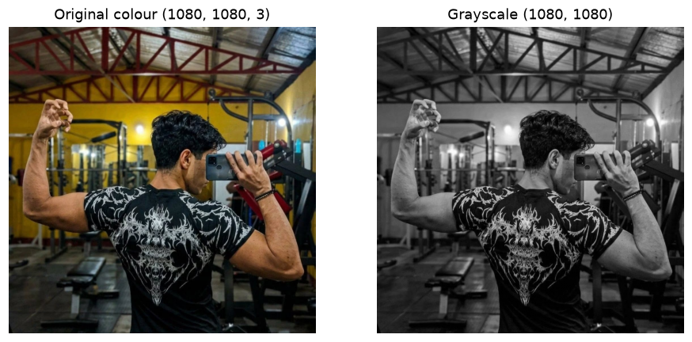
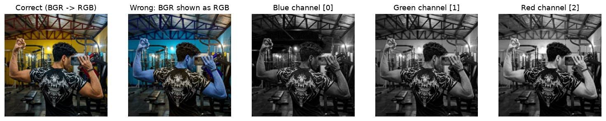
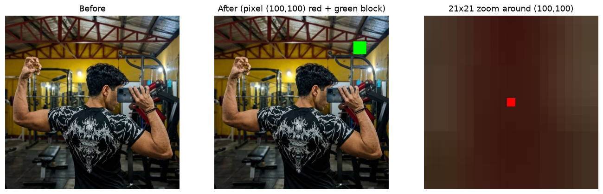
img[260:580, 470:900] → 320 × 430, resize 0.5× → 540 × 540 and 1.5× → 1620 × 1620 (drawn on the same axes to show the size change), rotation 90° clockwise and counter-clockwise.]]
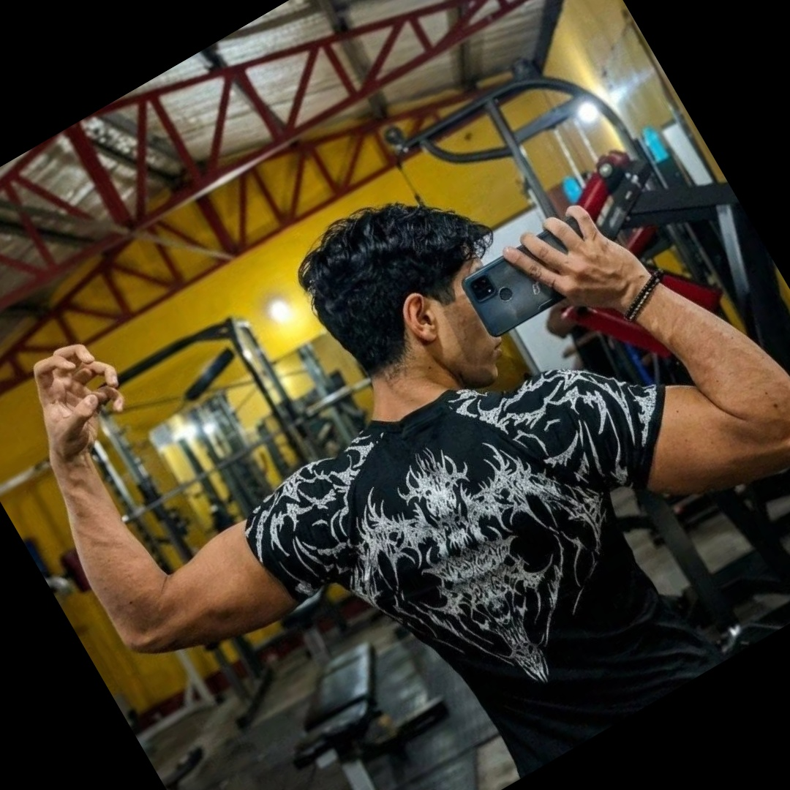
Observations
img.shape = (1080, 1080, 3): height 1080, width 1080, 3 channels.dtype = uint8, values 0–255, 3,499,200 numbers in total.- Grayscale conversion is a weighted sum, not a plain average. Pixel (100, 100) has B = 15, G = 23, R = 60, and 0.299·60 + 0.587·23 + 0.114·15 = 33.2, which OpenCV rounds to the stored value 33. A pixel of the light shirt print at (750, 550) gives 0.299·71 + 0.587·82 + 0.114·84 = 78.9 → 79. Green gets the largest weight because the human eye is most sensitive to green.
- Writing
img[100, 100] = [0, 0, 255]gives pure red, not blue, which confirms the BGR order. - Cropping is just array slicing
img[y1:y2, x1:x2], with rows first. The result is a view of the original memory, so.copy()is needed to edit it independently. - Shrinking with
INTER_AREAaverages neighbouring pixels and avoids aliasing. Enlarging has to invent pixels by interpolation, so the 1620 × 1620 image is bigger but not sharper. cv2.rotateby 90° only rearranges pixels: it is lossless and swaps height and width (identical here because the image is square). A 30° rotation needs interpolation and loses the corners unless the canvas is enlarged.
Short report
In this activity a colour photograph was loaded with OpenCV and inspected as data. Printing its shape showed that the image is simply a 1080 × 1080 × 3 array of 8-bit integers: 1080 rows, 1080 columns and three colour values per pixel, stored in B, G, R order. Splitting the channels showed that each one is a grayscale “map” of how much of that colour is present. Converting to grayscale collapsed the three channels into one luminance value using the weighted formula 0.299R + 0.587G + 0.114B, verified by hand on several pixels, which cut the memory to one third.
Pixel values were read and written with ordinary array indexing. Setting one pixel to [0, 0, 255] turned it red, proving the BGR order, and a whole block could be recoloured with one slicing statement. In Part 2 the basic geometric operations were performed: cropping a region of interest by slicing, resizing down and up with different interpolation methods, and rotating by 90° (lossless) and by 30° (needs interpolation and loses the corners).
What was learned: every image operation, from changing a colour to cropping or rotating, is ultimately arithmetic or indexing on a numeric array. Understanding shape, data type, channel order and value range is therefore the foundation for everything that follows in computer vision: filtering, edge detection, feature extraction and deep learning all take these arrays as input.
Summary discussion
How are images digitally represented and manipulated?
A digital image is a grid of samples (pixels) obtained by measuring light at regular positions (sampling) and rounding the measurement to a fixed number of levels (quantization, here 256 levels per channel). In software the grid is a matrix (gray) or a stack of matrices (colour). Manipulation therefore means array operations:
- Point operations change each value independently, e.g. brightness/contrast or colour conversion.
- Geometric operations move pixels to new positions: crop, resize, rotate, warp.
- Neighbourhood operations compute a pixel from its neighbours: blur, edge detection.
What is the significance of colour channels and pixel values?
Pixel values carry the actual measurement (how bright that point is), and channels carry the colour information. Together they decide what algorithms can “see”:
- A ripe red fruit is easy to separate in the R channel or the HSV hue channel, but may be invisible in grayscale if it has the same luminance as the leaves.
- Many algorithms (edges, features, faces) work on one grayscale channel because it is three times smaller and brightness carries most of the structure.
- Getting the channel order wrong (BGR vs RGB) silently swaps red and blue, which corrupts colour-based processing and pretrained neural networks.
- The value range and data type matter for arithmetic:
uint8wraps around or saturates at 255, so computations are often done infloat.
What are real-life applications of computer vision involving image processing?
- Medical imaging: contrast enhancement of X-rays, tumour segmentation in MRI.
- Smartphone cameras: HDR, portrait blur, auto-crop, document scanning with perspective correction.
- Traffic systems: licence-plate recognition, crop-and-resize of the plate region.
- Manufacturing quality inspection: colour thresholds to find defects.
- Agriculture: fruit grading by colour, crop health from multispectral channels.
- Face unlock and biometrics.
- Autonomous vehicles: lane and obstacle detection.
- Satellite and remote sensing.
Conclusion
The activity showed that a digital image is a structured numeric array defined by its resolution, number of channels and bit depth, and that OpenCV stores colour as BGR. With only indexing, slicing and a few OpenCV calls (cvtColor, resize, rotate, warpAffine) we could inspect and change individual pixels, convert colour to grayscale with the correct luminance weights, crop regions of interest, scale and rotate images. These basic representations and operations are the building blocks for the more advanced topics in the following labs.
Laboratory Experiment 2: Edge Detection: Sobel and Canny
Objective
To understand and implement two fundamental edge detectors, Sobel and Canny, with Python and OpenCV. That means preprocessing the image, applying both detectors and comparing the edge maps they produce.
Background
- Edge. A place where intensity changes sharply, which usually marks an object boundary, a texture change or a shadow. Mathematically it is a large value of the image gradient ∇I = (∂I/∂x, ∂I/∂y).
- Sobel. Two 3 × 3 convolution kernels estimate the derivatives. Gx = [[-1 0 1], [-2 0 2], [-1 0 1]] responds to vertical edges and Gy (its transpose) to horizontal edges. The kernel also smooths slightly. The edge strength is the magnitude √(Gx² + Gy²), which the program computes with
cv2.magnitude. - Canny. A multi-stage algorithm:
- Gaussian smoothing.
- Sobel gradients (magnitude and direction).
- Non-maximum suppression: keep a pixel only if it is the local maximum across the edge, which thins edges to 1 px.
- Double threshold: above the high threshold (200) is a strong edge, below the low threshold (100) is discarded.
- Hysteresis: weak pixels are kept only if they connect to a strong edge.
Code
The edge_detection() function is the one given in the handout. The only change is that the figure is saved to a file and the intermediate results are returned for the extra analysis. The test image input.jpg is our own photo (a gym mirror selfie), resized to 540 × 540 and read in grayscale.
Source code: lab02_edge_detection.py (88 lines) download
"""Lab 2 - Edge Detection: Sobel vs Canny on input.jpg.""" import os import cv2 import numpy as np import matplotlib matplotlib.use("Agg") import matplotlib.pyplot as plt HERE = os.path.dirname(os.path.abspath(__file__)) OUT = os.path.join(HERE, "..", "site", "img") os.makedirs(OUT, exist_ok=True) def save(name): plt.savefig(os.path.join(OUT, name), dpi=110, bbox_inches="tight") plt.close() def edge_detection(image_path): # Load the image in grayscale img = cv2.imread(image_path, cv2.IMREAD_GRAYSCALE) if img is None: print("Error: Image not found or path is incorrect.") return None # Apply Gaussian blur to reduce noise img_blur = cv2.GaussianBlur(img, (3, 3), 0) # Sobel edge detection (detects edges along x and y gradient directions) sobelx = cv2.Sobel(img_blur, cv2.CV_64F, 1, 0, ksize=3) sobely = cv2.Sobel(img_blur, cv2.CV_64F, 0, 1, ksize=3) sobel_combined = cv2.magnitude(sobelx, sobely) # Canny edge detection (detects strong edges using gradient and thresholding) edges_canny = cv2.Canny(img_blur, 100, 200) # Display results side by side (saved to file instead of plt.show()) plt.figure(figsize=(15, 5.5)) plt.subplot(1, 3, 1); plt.imshow(img, cmap="gray"); plt.title("Original Image"); plt.axis("off") plt.subplot(1, 3, 2); plt.imshow(sobel_combined, cmap="gray"); plt.title("Sobel Edge Detection"); plt.axis("off") plt.subplot(1, 3, 3); plt.imshow(edges_canny, cmap="gray"); plt.title("Canny Edge Detection"); plt.axis("off") save("lab02_side_by_side.png") return img, img_blur, sobelx, sobely, sobel_combined, edges_canny img, img_blur, sobelx, sobely, sobel, canny = edge_detection(os.path.join(HERE, "data", "input.jpg")) # ---- Extra analysis used to explain the differences ----------------------- # 1) Sobel directional components: x responds to vertical edges, y to horizontal edges plt.figure(figsize=(15, 5.5)) for i, (im, t) in enumerate([(np.abs(sobelx), "|Sobel X| (vertical edges)"), (np.abs(sobely), "|Sobel Y| (horizontal edges)"), (sobel, "Magnitude sqrt(Gx^2 + Gy^2)")]): plt.subplot(1, 3, i + 1); plt.imshow(im, cmap="gray"); plt.title(t); plt.axis("off") save("lab02_sobel_xy.png") # 2) Zoomed crop: thick, graded Sobel response vs thin, binary Canny response y0, y1, x0, x1 = 130, 290, 230, 450 # head, hand and phone region plt.figure(figsize=(15, 5.5)) for i, (im, t) in enumerate([(img, "Original (zoom)"), (sobel, "Sobel (zoom)"), (canny, "Canny (zoom)")]): plt.subplot(1, 3, i + 1); plt.imshow(im[y0:y1, x0:x1], cmap="gray", interpolation="nearest") plt.title(t); plt.axis("off") save("lab02_zoom.png") # 3) Effect of the Canny hysteresis thresholds plt.figure(figsize=(15, 5.5)) for i, (lo, hi) in enumerate([(30, 80), (100, 200), (200, 300)]): e = cv2.Canny(img_blur, lo, hi) plt.subplot(1, 3, i + 1); plt.imshow(e, cmap="gray") plt.title(f"Canny low={lo}, high={hi}\n{100 * np.count_nonzero(e) / e.size:.2f}% edge pixels") plt.axis("off") save("lab02_canny_thresholds.png") # 4) Numbers sobel_8u = cv2.convertScaleAbs(sobel) _, sobel_bin = cv2.threshold(sobel_8u, 0, 255, cv2.THRESH_BINARY + cv2.THRESH_OTSU) print(f"image shape: {img.shape}") print(f"Sobel magnitude range: {sobel.min():.1f} .. {sobel.max():.1f}, " f"unique values: {len(np.unique(sobel_8u))} (continuous / grayscale map)") print(f"Canny unique values: {np.unique(canny)} (binary map)") print(f"Sobel pixels above Otsu threshold: {100 * np.count_nonzero(sobel_bin) / sobel_bin.size:.2f}%") print(f"Canny edge pixels (100,200): {100 * np.count_nonzero(canny) / canny.size:.2f}%") # Edge thickness along a horizontal line through the arms, shirt and gym equipment row = 400 print(f"row {row}: Sobel(Otsu) pixels on = {np.count_nonzero(sobel_bin[row])}, " f"Canny pixels on = {np.count_nonzero(canny[row])}")
Program output
Output of lab02.py (saved in lab02_output.txt)
image shape: (540, 540) Sobel magnitude range: 0.0 .. 521.8, unique values: 256 (continuous / grayscale map) Canny unique values: [ 0 255] (binary map) Sobel pixels above Otsu threshold: 18.81% Canny edge pixels (100,200): 7.74% row 400: Sobel(Otsu) pixels on = 86, Canny pixels on = 54
Results: original, Sobel and Canny side by side
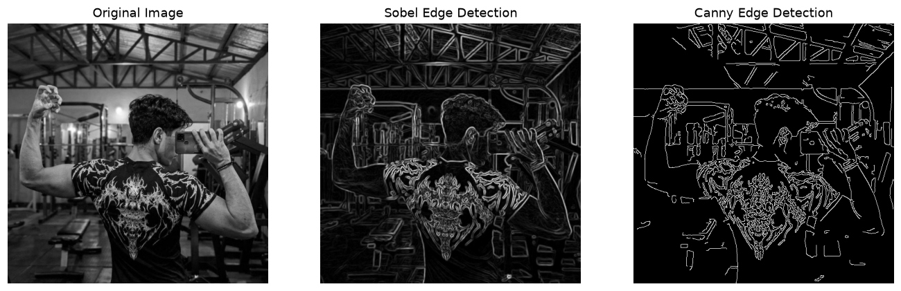
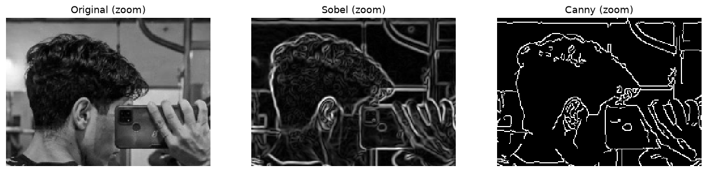
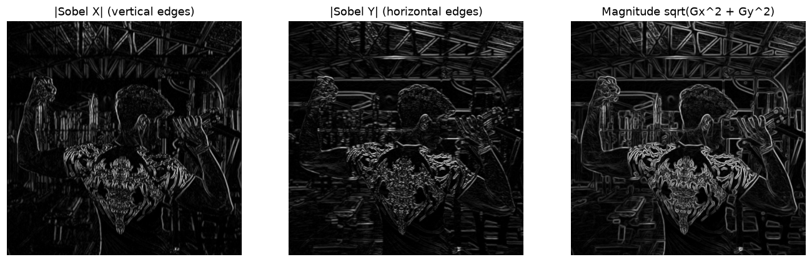
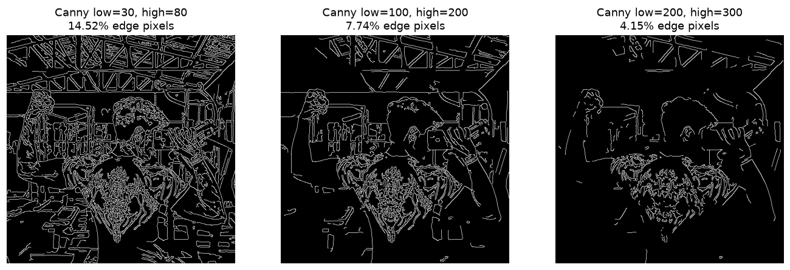
Question
1. Explain the differences between the edge maps produced by each method. Use the provided image input.jpg and display the original image, Sobel edges, and Canny edges side by side.
The side-by-side figure above shows the three images. The two edge maps differ in the following ways:
| Property | Sobel | Canny |
|---|---|---|
| Type of output | Continuous / grayscale gradient-magnitude map: values 0 … 521.8 in our run (256 distinct levels after scaling). Brighter means a stronger edge. | Binary map: only 0 and 255. A pixel either is an edge or is not. |
| Edge thickness | Thick: an intensity ramp produces a ridge several pixels wide. On row 400 (across both arms and the shirt), the Sobel map thresholded with Otsu has 86 “on” pixels. | Thin: non-maximum suppression keeps only the ridge centre, 1 pixel wide. On the same row Canny has only 54 pixels. |
| Amount of edges | 18.81% of pixels are above the Otsu threshold. Weak texture (hair, roof sheeting, fabric folds, floor) also shows up as grey. | 7.74% of pixels with thresholds 100/200. Most weak texture is discarded; the high-contrast shirt print still produces many contours because it really is full of strong edges. |
| Noise sensitivity | Higher: every local intensity change gives some response, and there is no step that removes isolated responses. | Lower: Gaussian smoothing plus double thresholding plus hysteresis remove isolated weak responses and keep weak pixels only when they continue a strong edge. |
| Continuity | Boundaries look continuous because they are blurry, but no explicit contours are formed. | Produces connected, well-localised contour lines (arm and head outline, phone, roof trusses), which are directly usable for contour finding and segmentation. |
| Direction information | Gives Gx and Gy separately, so edge orientation is available (see the Sobel X/Y figure). | Uses direction internally but outputs only edge locations. |
| Parameters / cost | Only the kernel size. One convolution per direction, so it is very fast. | Two thresholds that strongly change the result (14.52% vs 4.15% edge pixels in the threshold figure). Several stages, so it is slower but still real-time. |
In short, Sobel measures “how much edge” there is at every pixel, giving a soft, thick, texture-rich map. Canny decides “where exactly the edges are”, giving thin, clean, binary contours, at the cost of choosing thresholds.
Conclusion
Both detectors locate intensity changes through the image gradient, but they serve different purposes. Sobel is a simple first-derivative filter: fast, gives edge strength and direction, but its edges are thick and it responds to noise and fine texture. Canny builds on the Sobel gradient and adds smoothing, non-maximum suppression and hysteresis thresholding. On our gym photo it produced thin (54 vs 86 pixels on the same row), binary, well-connected contours with much less texture (7.74% vs 18.81% edge pixels), although its result depends strongly on the threshold pair. Sobel suits tasks that need gradient magnitude or orientation (feature descriptors, sharpness measures). Canny suits tasks that need clean object outlines (contour detection, segmentation, shape analysis). Gaussian blurring before both detectors is an important preprocessing step to reduce false edges caused by noise.
Laboratory Experiment 3: Histogram Equalization and CLAHE
Objective
- Understand and implement histogram equalization to enhance image contrast.
- Perform global and adaptive histogram equalization (CLAHE) to improve image quality.
- Apply contrast adjustment techniques and analyze their impact on image visualization.
Images used
- Grayscale: our own gym photo (
input.jpg, 540 × 540) read in grayscale. It is a real underexposed photo: the black shirt, hair and floor fill the dark end of the histogram, the mean brightness is only 67.4 and most pixels lie below 100, although a few lamp and window pixels reach 255. - Colour:
hazy_color.jpg, made from the same photo by compressing its range (0.35·I + 95). This simulates a foggy, washed-out photo for the colour part.
Code (Parts 1, 2 and 3)
Part 1 uses cv2.equalizeHist for grayscale and equalizes only the luminance channel (Y of YUV, V of HSV) for colour. Part 2 implements linear contrast stretching (min-max, percentile and α/β gain-bias) and CLAHE. Part 3 is the required own Python implementation of histogram equalization from the CDF, checked against OpenCV.
Source code: lab03_histogram.py (164 lines) download
"""Lab 3 - Histogram Equalization and Contrast Adjustment.""" import os import cv2 import numpy as np import matplotlib matplotlib.use("Agg") import matplotlib.pyplot as plt HERE = os.path.dirname(os.path.abspath(__file__)) OUT = os.path.join(HERE, "..", "site", "img") os.makedirs(OUT, exist_ok=True) def save(name): plt.savefig(os.path.join(OUT, name), dpi=110, bbox_inches="tight") plt.close() def hist(gray): """256-bin histogram of an 8-bit grayscale image.""" return cv2.calcHist([gray], [0], None, [256], [0, 256]).ravel() def entropy(gray): p = hist(gray) / gray.size p = p[p > 0] return float(-(p * np.log2(p)).sum()) def stats(name, gray): print(f"{name:28s} min={gray.min():3d} max={gray.max():3d} mean={gray.mean():6.1f} " f"std(RMS contrast)={gray.std():5.1f} entropy={entropy(gray):.2f} bits " f"levels used={np.count_nonzero(hist(gray))}") def show_with_hist(images, titles, name): """Images on the top row, their histograms (+ normalised CDF) underneath.""" n = len(images) fig, ax = plt.subplots(2, n, figsize=(4.6 * n, 8)) for i, (im, t) in enumerate(zip(images, titles)): ax[0, i].imshow(im, cmap="gray", vmin=0, vmax=255); ax[0, i].set_title(t); ax[0, i].axis("off") h = hist(im) ax[1, i].bar(range(256), h, width=1.0, color="steelblue") cdf = h.cumsum() ax2 = ax[1, i].twinx() ax2.plot(cdf / cdf[-1], color="crimson", lw=1.3); ax2.set_ylim(0, 1.05) ax[1, i].set_xlim(0, 255); ax[1, i].set_xlabel("intensity") ax[1, i].set_title("histogram (bars) + CDF (red)") plt.tight_layout() save(name) # =========================================================================== # Part 1: Histogram equalization # =========================================================================== # 1-2. Load the image and convert it to grayscale --------------------------- gray = cv2.imread(os.path.join(HERE, "data", "input.jpg"), cv2.IMREAD_GRAYSCALE) # 3. Histogram of the input ------------------------------------------------ h_orig = hist(gray) # 4a. Global histogram equalization for grayscale --------------------------- eq = cv2.equalizeHist(gray) # 5. Display original vs equalized and both histograms --------------------- show_with_hist([gray, eq], ["Original (dark, underexposed)", "cv2.equalizeHist()"], "lab03_part1_gray.png") # 4b. Colour image: equalize ONLY the luminance channel --------------------- color = cv2.imread(os.path.join(HERE, "data", "hazy_color.jpg")) yuv = cv2.cvtColor(color, cv2.COLOR_BGR2YUV) yuv[:, :, 0] = cv2.equalizeHist(yuv[:, :, 0]) eq_yuv = cv2.cvtColor(yuv, cv2.COLOR_YUV2BGR) hsv = cv2.cvtColor(color, cv2.COLOR_BGR2HSV) hsv[:, :, 2] = cv2.equalizeHist(hsv[:, :, 2]) eq_hsv = cv2.cvtColor(hsv, cv2.COLOR_HSV2BGR) # Wrong way, for comparison: equalize B, G and R independently eq_rgb_naive = cv2.merge([cv2.equalizeHist(c) for c in cv2.split(color)]) fig, ax = plt.subplots(1, 4, figsize=(20, 4.4)) for a, (im, t) in zip(ax, [(color, "Original (hazy colour)"), (eq_yuv, "Equalized Y of YUV"), (eq_hsv, "Equalized V of HSV"), (eq_rgb_naive, "Naive: each B,G,R separately")]): a.imshow(cv2.cvtColor(im, cv2.COLOR_BGR2RGB)); a.set_title(t); a.axis("off") save("lab03_part1_color.png") # =========================================================================== # Part 2: Contrast adjustment # =========================================================================== # 1. Linear contrast stretching: map [r_min, r_max] -> [0, 255] def contrast_stretch(img, low_pct=0, high_pct=100): lo, hi = np.percentile(img, (low_pct, high_pct)) out = (img.astype(np.float32) - lo) * 255.0 / (hi - lo) return np.clip(out, 0, 255).astype(np.uint8) stretched = contrast_stretch(gray) # pure min-max stretched_p = contrast_stretch(gray, 2, 98) # ignores 2 % outliers at each end alpha_beta = cv2.convertScaleAbs(gray, alpha=1.5, beta=30) # g(x) = alpha*f(x) + beta # 2. CLAHE clahe = cv2.createCLAHE(clipLimit=2.0, tileGridSize=(8, 8)) cl = clahe.apply(gray) # 3. Visualise: original, linear stretch, global HE, CLAHE + histograms show_with_hist([gray, stretched_p, eq, cl], ["Original", "Linear stretch (2-98 %)", "Global HE", "CLAHE (clip=2, 8x8)"], "lab03_part2_compare.png") fig, ax = plt.subplots(1, 3, figsize=(15, 5)) for a, (im, t) in zip(ax, [(stretched, "Min-max stretch (0-100 %)"), (stretched_p, "Percentile stretch (2-98 %)"), (alpha_beta, "alpha=1.5, beta=30")]): a.imshow(im, cmap="gray", vmin=0, vmax=255); a.set_title(t); a.axis("off") save("lab03_linear_variants.png") # CLAHE parameter study fig, ax = plt.subplots(1, 4, figsize=(20, 5)) for a, (clip, tile) in zip(ax, [(1.0, 8), (2.0, 8), (4.0, 8), (2.0, 16)]): out = cv2.createCLAHE(clipLimit=clip, tileGridSize=(tile, tile)).apply(gray) a.imshow(out, cmap="gray"); a.set_title(f"clipLimit={clip}, tiles={tile}x{tile}"); a.axis("off") save("lab03_clahe_params.png") # =========================================================================== # Part 3: Histogram equalization written from scratch # =========================================================================== def equalize_manual(img): """T(r) = round((CDF(r) - CDF_min) / (N - CDF_min) * 255) -- same rule OpenCV uses.""" h = np.bincount(img.ravel(), minlength=256) cdf = h.cumsum() cdf_min = cdf[np.nonzero(cdf)[0][0]] lut = np.round((cdf - cdf_min) / (img.size - cdf_min) * 255) lut = np.clip(lut, 0, 255).astype(np.uint8) return lut[img], lut eq_manual, lut = equalize_manual(gray) diff = np.abs(eq_manual.astype(int) - eq.astype(int)) print(f"manual vs cv2.equalizeHist: max abs difference = {diff.max()}, " f"pixels differing = {np.count_nonzero(diff)}") fig, ax = plt.subplots(1, 3, figsize=(16, 4.6)) ax[0].plot(lut, color="crimson"); ax[0].plot([0, 255], [0, 255], "k--", lw=0.8) ax[0].set_title("Mapping T(r) learned from the CDF"); ax[0].set_xlabel("input r"); ax[0].set_ylabel("output s") ax[1].imshow(eq_manual, cmap="gray"); ax[1].set_title("Manual equalization"); ax[1].axis("off") ax[2].imshow(diff, cmap="gray", vmin=0, vmax=1); ax[2].set_title(f"|manual - OpenCV| (max={diff.max()})"); ax[2].axis("off") save("lab03_part3_manual.png") # =========================================================================== # Part 4: Observations - numbers # =========================================================================== for name, im in [("original", gray), ("min-max stretch", stretched), ("percentile stretch", stretched_p), ("global HE", eq), ("CLAHE", cl)]: stats(name, im) # Noise amplification: std inside a visually flat 40x40 patch of the black T-shirt patch = (slice(460, 500), slice(290, 330)) for name, im in [("original", gray), ("global HE", eq), ("CLAHE", cl)]: print(f"flat-patch std ({name:9s}) = {im[patch].astype(float).std():.2f}") # Zoom on the flat patch area to make the amplification visible fig, ax = plt.subplots(1, 3, figsize=(15, 5)) for a, (im, t) in zip(ax, [(gray, "Original"), (eq, "Global HE"), (cl, "CLAHE")]): a.imshow(im[420:540, 250:370], cmap="gray", vmin=0, vmax=255, interpolation="nearest") a.set_title(t + " - 120x120 crop of the black shirt"); a.axis("off") save("lab03_noise_zoom.png")
Program output
Output of lab03.py (saved in lab03_output.txt)
manual vs cv2.equalizeHist: max abs difference = 0, pixels differing = 0 original min= 0 max=255 mean= 67.4 std(RMS contrast)= 51.8 entropy=7.41 bits levels used=256 min-max stretch min= 0 max=255 mean= 67.4 std(RMS contrast)= 51.8 entropy=7.41 bits levels used=256 percentile stretch min= 0 max=255 mean= 90.5 std(RMS contrast)= 69.9 entropy=7.27 bits levels used=186 global HE min= 0 max=255 mean= 127.6 std(RMS contrast)= 73.7 entropy=7.24 bits levels used=166 CLAHE min= 0 max=255 mean= 99.3 std(RMS contrast)= 66.2 entropy=7.83 bits levels used=256 flat-patch std (original ) = 3.24 flat-patch std (global HE) = 9.50 flat-patch std (CLAHE ) = 8.61
Part 1 – Histogram equalization
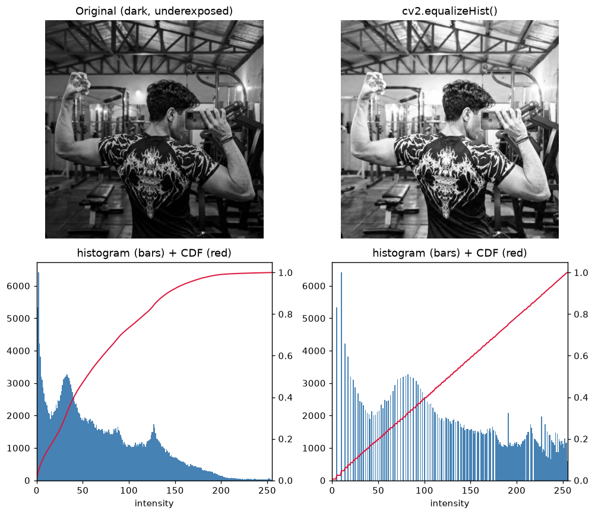
cv2.equalizeHist() with their histograms. The original histogram is piled up at the dark end (peaks near 0–5 and 30). Equalization spreads it over the whole 0–255 range, the mean rises from 67 to 128, and the CDF (red) becomes almost a straight line. The shirt print, the hair and the equipment in the shadows become visible.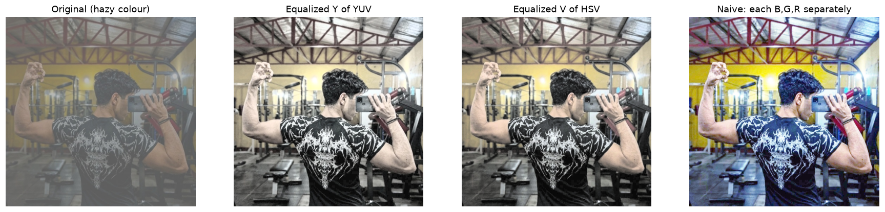
Part 2 – Contrast adjustment and CLAHE
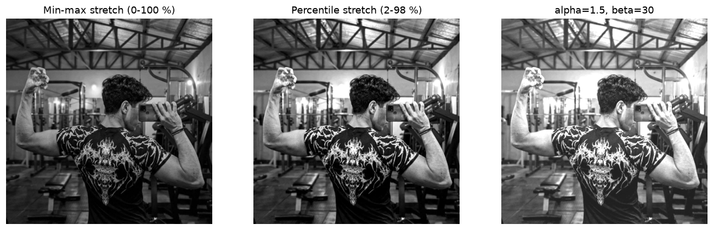
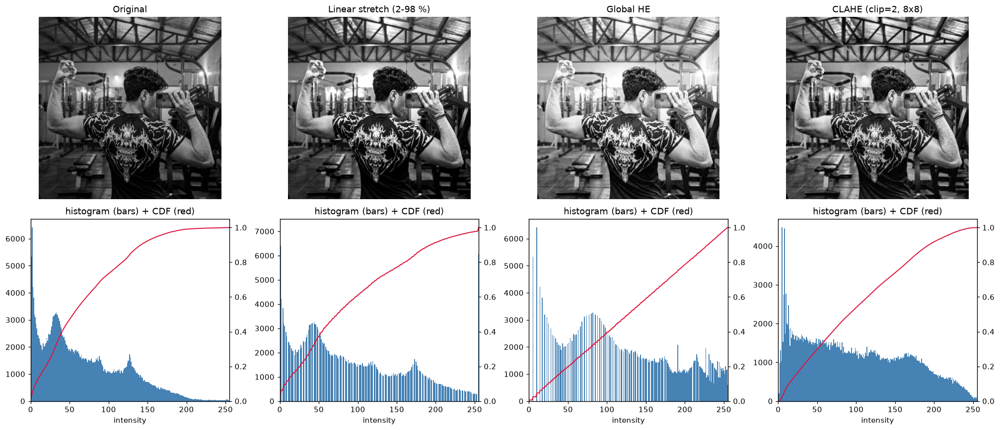
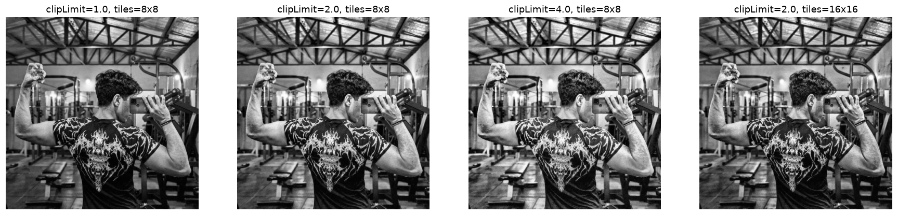
Part 3 – Own histogram-equalization code
equalize_manual() computes the histogram with np.bincount and the cumulative sum (CDF). It builds the look-up table T(r) = round((CDF(r) − CDFmin) / (N − CDFmin) · 255) and applies it with fancy indexing. The result is identical to cv2.equalizeHist: maximum difference 0 and 0 differing pixels.
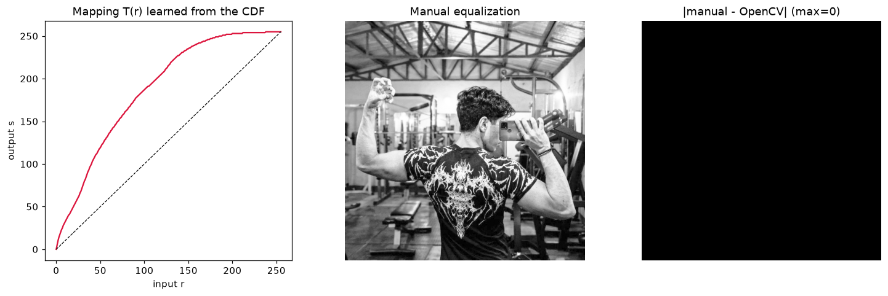
Part 4 – Observations
| Version | Std (RMS contrast) | Entropy (bits) | Grey levels used | Std in a flat 40×40 patch |
|---|---|---|---|---|
| Original | 51.8 | 7.41 | 256 | 3.24 |
| Min-max stretch | 51.8 | 7.41 | 256 | – |
| Percentile stretch (2–98%) | 69.9 | 7.27 | 186 | – |
| Global HE | 73.7 | 7.24 | 166 | 9.50 |
| CLAHE (clip 2, 8×8) | 66.2 | 7.83 | 256 | 8.61 |
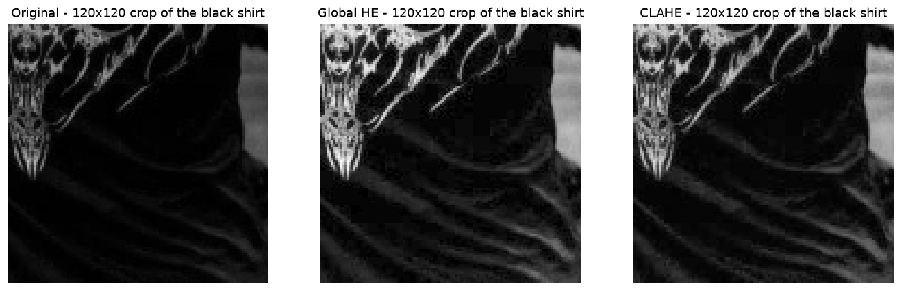
1. Compare the visibility of details and overall image contrast.
The original photo is dark: the shirt, hair and background equipment are crushed into the shadows, so details there are hard to see. Global HE gives the highest global contrast (std 51.8 → 73.7) and brightens the image (mean 67 → 128). The shirt print, the folds of the fabric and the gym equipment become clearly visible, but the image looks harsh and flat: the bright skin of the raised arm and the window area are pushed towards white, and neighbouring tones are merged (256 → 166 grey levels, the “comb” gaps in its histogram). CLAHE raises contrast a little less (std 66.2) but gives the best visibility of local detail: the hair, the shirt print, the arm muscles and the background are all readable at the same time, nothing new is saturated, and it keeps all 256 grey levels with the highest entropy (7.83 bits). The percentile linear stretch is in between: it brightens the whole image evenly and keeps the shape of the histogram. Plain min-max stretching does nothing here because the photo already contains pure black and pure white pixels.
2. Discuss differences between standard histogram equalization and CLAHE.
- Scope: HE uses one mapping computed from the histogram of the whole image. CLAHE divides the image into tiles (8 × 8 here), equalizes each tile with its own histogram and blends neighbouring mappings with bilinear interpolation, so it adapts to local brightness.
- Contrast limit: HE has none, so a large peak in the histogram produces a very steep mapping. CLAHE clips each tile histogram at
clipLimitand redistributes the excess, which limits the slope of the mapping and therefore the amplification. - Result: HE gives a strong global change and can wash out or darken regions. CLAHE gives a natural-looking image with enhanced local detail.
- Histogram: HE produces a roughly flat but “comb-like” histogram with gaps (166 levels). CLAHE keeps a smooth histogram that is only widened, and uses all 256 levels.
- Cost and parameters: HE is parameter-free and very cheap. CLAHE needs
clipLimitandtileGridSizeand is slightly more expensive.
3. Note any amplification of noise or artifacts.
Both methods amplified noise in dark, flat areas. In a 40 × 40 patch of the black shirt the standard deviation rose from 3.24 to 9.50 with global HE (2.9×) and to 8.61 with CLAHE (2.7×). Global HE does this because the shadows hold most of the pixels, so its mapping is steepest exactly there. CLAHE does it because the tiles covering the shirt are almost entirely dark, so each tile’s own mapping also stretches the dark levels. The clip limit keeps the increase slightly lower, but it does not remove it. Global HE also created posterization (banding), because neighbouring grey levels were merged (only 166 of 256 levels used), and it pushed the bright arm and window close to pure white. With a high clipLimit (4.0 in the parameter study) CLAHE amplifies noise and JPEG blocking even more and shows halo / tile artifacts around strong edges such as the arm against the wall. The colour test showed another artifact: equalizing R, G and B separately produces a false colour cast (blue shirt, over-saturated yellow wall).
Questions to answer
1. What is histogram equalization?
Histogram equalization is a contrast-enhancement technique that remaps the intensity values of an image so that its histogram becomes as close as possible to uniform, i.e. the pixels are spread over the whole available range (0–255). It is a point operation: each grey level r is replaced by a new level s = T(r), where T is computed from the image’s own cumulative distribution function. Frequent intensities get spread apart and rare ones get compressed.
2. Why do we need histogram equalization?
- Many images have poor contrast because of under- or over-exposure, haze, fog, a low-quality sensor or flat lighting. Their pixels occupy only part of the range (our gym photo has a mean of only 67 and most pixels below 100), so details in the shadows are hard to see.
- Equalization makes better use of the dynamic range. This improves visibility for humans (medical, satellite, night images) and normalizes inputs for algorithms: edge detectors, feature detectors, thresholding and face recognition work better and more consistently when contrast and lighting are standardized.
- It is automatic and parameter-free, so it can be applied to many images without manual tuning.
3. How does histogram equalization work?
- Compute the histogram h(r): the number of pixels with each grey level r = 0 … 255.
- Compute the cumulative distribution CDF(r) = Σk≤r h(k), which is the number of pixels darker than or equal to r.
- Normalize the CDF to the output range to obtain the mapping: T(r) = round( (CDF(r) − CDFmin) / (N − CDFmin) × 255 ), where N is the number of pixels.
- Replace every pixel through the look-up table: out = T(in).
Because T follows the CDF, it is steep where many pixels exist (those levels are pushed apart, which increases contrast) and flat where few pixels exist (those levels are merged). Our own implementation in Part 3 follows exactly these steps and matched cv2.equalizeHist pixel for pixel. For colour images the same procedure is applied only to the brightness channel (Y in YUV or V in HSV) so that hue is not changed.
4. How does CLAHE work?
CLAHE (Contrast Limited Adaptive Histogram Equalization) improves on HE in two ways:
- Adaptive: the image is divided into a grid of small tiles (
tileGridSize, e.g. 8 × 8), and a separate histogram and mapping is computed for each tile, so each region is enhanced according to its own brightness distribution. - Contrast limited: before computing each tile’s CDF, the histogram is clipped at a limit (
clipLimit× average bin height). The clipped excess is redistributed equally over all bins. This bounds the slope of the mapping and therefore how much contrast and noise can be amplified in uniform areas. - Interpolation: to avoid visible tile borders, each pixel’s output is obtained by bilinear interpolation between the mappings of the four nearest tile centres.
In OpenCV: clahe = cv2.createCLAHE(clipLimit=2.0, tileGridSize=(8, 8)); out = clahe.apply(gray).
5. What is the possible real-world application for histogram equalization?
- Medical imaging: enhancing X-ray, CT, mammogram and retinal fundus images so that tissues, vessels and lesions are more visible (CLAHE is standard for retinal and chest X-ray preprocessing).
- Satellite and aerial imagery: bringing out terrain, roads and land cover in hazy or low-light scenes.
- Surveillance and night vision / CCTV: making faces or licence plates visible in dark or backlit footage.
- Face recognition and detection preprocessing: normalizing illumination before feature extraction.
- Underwater and foggy images: dehazing and restoring contrast; driver-assistance cameras in fog or tunnels.
- Document scanning and OCR: improving text and background separation.
- Photography: auto-contrast and “enhance” functions in cameras and photo editors.
Conclusion
Histogram equalization is an automatic and inexpensive way to improve contrast by mapping intensities through the image’s cumulative distribution. Our own implementation reproduced cv2.equalizeHist exactly. On our underexposed gym photo, global HE raised the RMS contrast from 51.8 to 73.7 and the mean brightness from 67 to 128, revealing the shirt print and the equipment in the shadows, but it also merged grey levels (256 → 166), pushed the bright skin towards white and amplified noise in the flat black shirt 2.9× (std 3.24 → 9.50). CLAHE, by working on local tiles with a clip limit, revealed the most local detail (all 256 grey levels, highest entropy 7.83 bits) with a natural look, although it also amplified the noise in the dark shirt (8.61). Linear stretching is the gentlest method but is easily defeated by outliers unless percentiles are used. For colour images, enhancement must be applied to the luminance channel only to avoid colour shifts. The right technique depends on the goal: global HE for maximum contrast, CLAHE for natural-looking local enhancement, and linear stretching when relative intensities must be preserved.
Laboratory Experiment 4: Feature Detection with SURF
Objective
To understand and implement SURF (Speeded-Up Robust Features) feature detection with OpenCV, learn how SURF detects keypoints and computes descriptors, visualize the features, match them between images, and compare SURF with SIFT and ORB, including the upright mode U-SURF.
opencv-contrib-python wheels on PyPI are built without the “nonfree” module. In our environment (OpenCV 5.1.0) cv2.xfeatures2d.SURF_create() raises:error: (-213) This algorithm is patented and is excluded in this configuration; Set OPENCV_ENABLE_NONFREE CMake option and rebuild the libraryThe handout anticipates this (“If SURF is not available due to OpenCV version, ORB is a free alternative”). The program therefore:
- Contains the full handout SURF code (create, detectAndCompute, drawKeypoints, Hessian sweep, SURF and U-SURF matching). It runs automatically when OpenCV is built with
OPENCV_ENABLE_NONFREE=ON, or with old wheels such asopencv-contrib-python==3.4.2.17on Python ≤ 3.7. - Otherwise reproduces SURF’s detector stage (Fast-Hessian: determinant of the Hessian computed with integral-image box filters) with
skimage.feature.blob_dohto study the Hessian threshold. - Runs the matching comparison with SIFT and ORB.
- Demonstrates the U-SURF idea (skipping orientation assignment) with upright SIFT.
How SURF works (theory)
- Integral image. Any rectangular sum is computed in 4 look-ups, so box filters of any size cost the same.
- Fast-Hessian detector. The second-order Gaussian derivatives Dxx, Dyy and Dxy are approximated by box filters (9 × 9, 15 × 15, 21 × 21 …). A blob response is det(H) ≈ DxxDyy − (0.9·Dxy)². Instead of building an image pyramid, the filter is scaled up. Points that are maxima in a 3 × 3 × 3 scale-space neighbourhood and whose det(H) exceeds hessianThreshold become keypoints.
- Orientation. Haar-wavelet responses in x and y within a radius of 6s are summed in a sliding 60° window, and the dominant direction becomes the keypoint angle. U-SURF skips this step.
- Descriptor. A 20s square window aligned to the orientation is split into 4 × 4 sub-regions. Each sub-region contributes (Σdx, Σ|dx|, Σdy, Σ|dy|) of Haar responses, giving 4 × 4 × 4 = 64 values (128 in “extended” mode). The vector is normalized to unit length.
Experimental setup
Image 1 is scene.jpg, our gym photo resized to 540 × 540 and read in grayscale. Image 2 is the same scene rotated 30°, scaled 0.8× and brightened (gain 1.15, bias +10). Because we generated image 2, the true transform is known, so every match can be checked automatically: a match is correct if the true transform maps the keypoint within 4 px of its partner. Matching uses brute force with k = 2 and Lowe’s ratio test (0.75).
Code
Source code: lab04_surf_features.py (205 lines) download
"""Lab 4 - SURF feature detection, matching, comparison with SIFT/ORB, and U-SURF. SURF is patented, so the opencv-contrib-python wheels on PyPI are built WITHOUT the "nonfree" module and cv2.xfeatures2d.SURF_create() raises an error. This script uses real SURF when it is available (OpenCV built with OPENCV_ENABLE_NONFREE=ON) and otherwise: * reproduces SURF's detector stage (Fast-Hessian = determinant of the Hessian computed with integral images / box filters) with skimage.feature.blob_doh to study the Hessian threshold, and * demonstrates the U-SURF idea (skip orientation assignment) with upright SIFT. """ import os import time import cv2 import numpy as np import matplotlib matplotlib.use("Agg") import matplotlib.pyplot as plt HERE = os.path.dirname(os.path.abspath(__file__)) OUT = os.path.join(HERE, "..", "site", "img") os.makedirs(OUT, exist_ok=True) def save(name): plt.savefig(os.path.join(OUT, name), dpi=110, bbox_inches="tight") plt.close() # --------------------------------------------------------------------------- # 1. Import libraries and load image # --------------------------------------------------------------------------- img = cv2.imread(os.path.join(HERE, "data", "scene.jpg"), cv2.IMREAD_GRAYSCALE) if img is None: raise FileNotFoundError("Error loading image") h, w = img.shape # Second view of the same scene: rotated 30 deg, scaled 0.8x, brighter. # Because we create it ourselves the TRUE transform M is known, so every match # can be checked automatically (ground truth for matching accuracy). def make_view(angle, scale, gain=1.15, bias=10): M = cv2.getRotationMatrix2D((w / 2, h / 2), angle, scale) view = cv2.warpAffine(img, M, (w, h), borderValue=0) view = cv2.convertScaleAbs(view, alpha=gain, beta=bias) return view, M img2, M_true = make_view(30, 0.8) # --------------------------------------------------------------------------- # 2. Create SURF detector (if this OpenCV build has it) # --------------------------------------------------------------------------- try: cv2.xfeatures2d.SURF_create(400) SURF_AVAILABLE = True except (cv2.error, AttributeError) as e: SURF_AVAILABLE = False print("SURF not available in this OpenCV build:", str(e).strip().splitlines()[-1]) print("OpenCV", cv2.__version__, "| SURF available:", SURF_AVAILABLE) if SURF_AVAILABLE: hessian_threshold = 400 surf = cv2.xfeatures2d.SURF_create(hessianThreshold=hessian_threshold) keypoints, descriptors = surf.detectAndCompute(img, None) print(f"Number of keypoints detected: {len(keypoints)}") # 3. Draw keypoints with size and orientation img_kp = cv2.drawKeypoints(img, keypoints, None, (255, 0, 0), cv2.DRAW_MATCHES_FLAGS_DRAW_RICH_KEYPOINTS) cv2.imwrite(os.path.join(OUT, "lab04_surf_keypoints.png"), img_kp) # Q1: Hessian threshold sweep with real SURF thresholds = [100, 400, 1000, 2000, 5000] counts = [len(cv2.xfeatures2d.SURF_create(t).detect(img, None)) for t in thresholds] else: # Q1 with SURF's detector stage reproduced by blob_doh (determinant of Hessian, # integral-image box filters). Its threshold plays the role of hessianThreshold. from skimage.feature import blob_doh norm = img.astype(np.float64) / 255.0 # overlap=1.0 disables blob pruning, so (like SURF) only non-maximum suppression is applied thresholds = [0.0005, 0.001, 0.002, 0.005, 0.01] blobs_by_t = {t: blob_doh(norm, min_sigma=2, max_sigma=30, num_sigma=10, threshold=t, overlap=1.0) for t in thresholds} counts = [len(blobs_by_t[t]) for t in thresholds] fig, ax = plt.subplots(1, 3, figsize=(18, 6.2)) for a, t in zip(ax, [thresholds[1], thresholds[2], thresholds[3]]): a.imshow(img, cmap="gray") for y, x, s in blobs_by_t[t]: a.add_patch(plt.Circle((x, y), s * 1.414, color="lime", fill=False, lw=0.9)) a.set_title(f"Fast-Hessian (det of Hessian), threshold={t}\n{len(blobs_by_t[t])} keypoints") a.axis("off") save("lab04_hessian_blobs.png") for t, c in zip(thresholds, counts): print(f"Hessian threshold {t:>8}: {c} keypoints") plt.figure(figsize=(7, 4.2)) plt.plot([str(t) for t in thresholds], counts, "o-", color="crimson") plt.xlabel("Hessian threshold"); plt.ylabel("number of keypoints"); plt.yscale("log"); plt.grid(alpha=0.3) plt.title("Higher Hessian threshold -> fewer, stronger keypoints") save("lab04_threshold_curve.png") # --------------------------------------------------------------------------- # LAB ACTIVITY: matching + SURF vs SIFT vs ORB # --------------------------------------------------------------------------- detectors = {} if SURF_AVAILABLE: detectors["SURF"] = (cv2.xfeatures2d.SURF_create(400), cv2.NORM_L2) detectors["U-SURF"] = (cv2.xfeatures2d.SURF_create(400, upright=True), cv2.NORM_L2) detectors["SIFT"] = (cv2.SIFT_create(), cv2.NORM_L2) detectors["ORB"] = (cv2.ORB_create(nfeatures=2000), cv2.NORM_HAMMING) def is_correct(pt1, pt2, M, tol=4.0): """A match is correct if the true transform maps pt1 within tol pixels of pt2.""" p = M @ np.array([pt1[0], pt1[1], 1.0]) return np.hypot(p[0] - pt2[0], p[1] - pt2[1]) <= tol def match(name, det, norm, a, b, M, draw=None): t0 = time.perf_counter() kp1, d1 = det.detectAndCompute(a, None) kp2, d2 = det.detectAndCompute(b, None) t_detect = (time.perf_counter() - t0) * 1000 t0 = time.perf_counter() knn = cv2.BFMatcher(norm).knnMatch(d1, d2, k=2) good = [m for m, n in (p for p in knn if len(p) == 2) if m.distance < 0.75 * n.distance] # Lowe ratio test t_match = (time.perf_counter() - t0) * 1000 correct = sum(is_correct(kp1[m.queryIdx].pt, kp2[m.trainIdx].pt, M) for m in good) res = dict(kp1=len(kp1), kp2=len(kp2), dim=d1.shape[1], dtype=str(d1.dtype), good=len(good), correct=correct, precision=correct / max(len(good), 1), t_detect=t_detect, t_match=t_match) if draw: good_sorted = sorted(good, key=lambda m: m.distance)[:60] vis = cv2.drawMatches(a, kp1, b, kp2, good_sorted, None, flags=cv2.DrawMatchesFlags_NOT_DRAW_SINGLE_POINTS) plt.figure(figsize=(14, 6.5)); plt.imshow(vis[:, :, ::-1]) plt.title(f"{name}: best 60 of {len(good)} ratio-test matches " f"({correct} geometrically correct, {100 * res['precision']:.1f}%)") plt.axis("off"); save(draw) return res, kp1 results = {} for name, (det, norm) in detectors.items(): det.detectAndCompute(img, None) # warm-up for fair timing r, kp = match(name, det, norm, img, img2, M_true, draw=f"lab04_matches_{name.lower()}.png") results[name] = r print(f"{name:7s} kp={r['kp1']:5d}/{r['kp2']:5d} desc={r['dim']:3d}-D {r['dtype']:7s} " f"good={r['good']:5d} correct={r['correct']:5d} ({100 * r['precision']:.1f}%) " f"detect+describe(2 imgs)={r['t_detect']:.1f} ms match={r['t_match']:.1f} ms") # Keypoint visualisation for each detector (rich keypoints: size + orientation) fig, ax = plt.subplots(1, len(detectors), figsize=(6 * len(detectors), 6.2)) for a, (name, (det, _)) in zip(np.atleast_1d(ax), detectors.items()): kps = det.detect(img, None) vis = cv2.drawKeypoints(img, kps, None, (0, 255, 0), cv2.DRAW_MATCHES_FLAGS_DRAW_RICH_KEYPOINTS) a.imshow(vis[:, :, ::-1]); a.set_title(f"{name}: {len(kps)} keypoints"); a.axis("off") save("lab04_keypoints_compare.png") # --------------------------------------------------------------------------- # U-SURF / upright mode: skip orientation assignment # --------------------------------------------------------------------------- def upright_sift_match(a, b, M): """Upright variant of SIFT: force every keypoint angle to 0 before describing.""" sift = cv2.SIFT_create() def upright(kps): # SIFT returns one keypoint per dominant orientation; with angle=0 those copies # become identical and would break the ratio test, so keep one per location/scale. unique = {} for k in kps: unique.setdefault((round(k.pt[0], 1), round(k.pt[1], 1), round(k.size, 1)), k) for k in unique.values(): k.angle = 0 return list(unique.values()) kp1 = upright(sift.detect(a, None)); kp2 = upright(sift.detect(b, None)) kp1, d1 = sift.compute(a, kp1); kp2, d2 = sift.compute(b, kp2) knn = cv2.BFMatcher(cv2.NORM_L2).knnMatch(d1, d2, k=2) good = [m for m, n in (p for p in knn if len(p) == 2) if m.distance < 0.75 * n.distance] correct = sum(is_correct(kp1[m.queryIdx].pt, kp2[m.trainIdx].pt, M) for m in good) return correct, len(good) print("\nUpright (orientation-free) vs rotation-invariant descriptors:") rows = [] for angle in [0, 5, 10, 20, 45, 90]: view, M = make_view(angle, 1.0) if SURF_AVAILABLE: rc, _ = match("SURF", cv2.xfeatures2d.SURF_create(400), cv2.NORM_L2, img, view, M) uc, _ = match("U-SURF", cv2.xfeatures2d.SURF_create(400, upright=True), cv2.NORM_L2, img, view, M) rot_c, up_c = rc["correct"], uc["correct"] labels = ("SURF", "U-SURF") else: rc, _ = match("SIFT", cv2.SIFT_create(), cv2.NORM_L2, img, view, M) rot_c = rc["correct"] up_c, _ = upright_sift_match(img, view, M) labels = ("SIFT (oriented)", "Upright SIFT (U-SURF idea)") rows.append((angle, rot_c, up_c)) print(f"rotation {angle:3d} deg: {labels[0]} correct={rot_c:5d} {labels[1]} correct={up_c:5d}") plt.figure(figsize=(7.5, 4.3)) plt.plot([r[0] for r in rows], [r[1] for r in rows], "o-", label=labels[0]) plt.plot([r[0] for r in rows], [r[2] for r in rows], "s-", label=labels[1]) plt.xlabel("in-plane rotation of second image (deg)"); plt.ylabel("correct matches") plt.title("Upright descriptors only work when the camera is not rotated"); plt.grid(alpha=0.3); plt.legend() save("lab04_upright.png")
Program output
Output of lab04.py (saved in lab04_output.txt)
SURF not available in this OpenCV build: OpenCV(5.1.0) D:\a\opencv-python\opencv-python\opencv_contrib\modules\xfeatures2d\src\surf.cpp:1028: error: (-213:The function/feature is not implemented) This algorithm is patented and is excluded in this configuration; Set OPENCV_ENABLE_NONFREE CMake option and rebuild the library in function 'create' OpenCV 5.1.0 | SURF available: False Hessian threshold 0.0005: 4133 keypoints Hessian threshold 0.001: 2824 keypoints Hessian threshold 0.002: 1580 keypoints Hessian threshold 0.005: 388 keypoints Hessian threshold 0.01: 22 keypoints SIFT kp= 2317/ 2089 desc=128-D float32 good= 1458 correct= 1435 (98.4%) detect+describe(2 imgs)=286.7 ms match=70.6 ms ORB kp= 2000/ 2000 desc= 32-D uint8 good= 952 correct= 943 (99.1%) detect+describe(2 imgs)=27.3 ms match=24.9 ms Upright (orientation-free) vs rotation-invariant descriptors: rotation 0 deg: SIFT (oriented) correct= 2231 Upright SIFT (U-SURF idea) correct= 1862 rotation 5 deg: SIFT (oriented) correct= 1634 Upright SIFT (U-SURF idea) correct= 1453 rotation 10 deg: SIFT (oriented) correct= 1591 Upright SIFT (U-SURF idea) correct= 1264 rotation 20 deg: SIFT (oriented) correct= 1597 Upright SIFT (U-SURF idea) correct= 48 rotation 45 deg: SIFT (oriented) correct= 1548 Upright SIFT (U-SURF idea) correct= 0 rotation 90 deg: SIFT (oriented) correct= 2018 Upright SIFT (U-SURF idea) correct= 0
Step 2–3: Fast-Hessian keypoints and the Hessian threshold
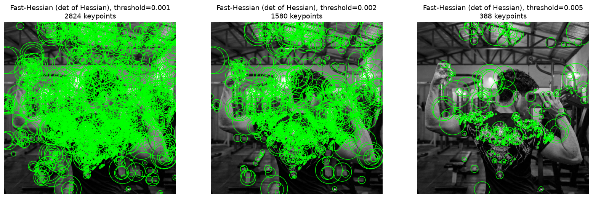
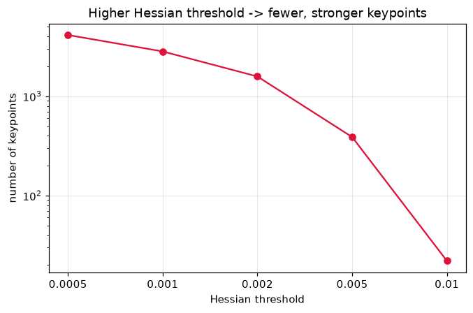
Lab activity 1–2: Feature matching and comparison with SIFT and ORB
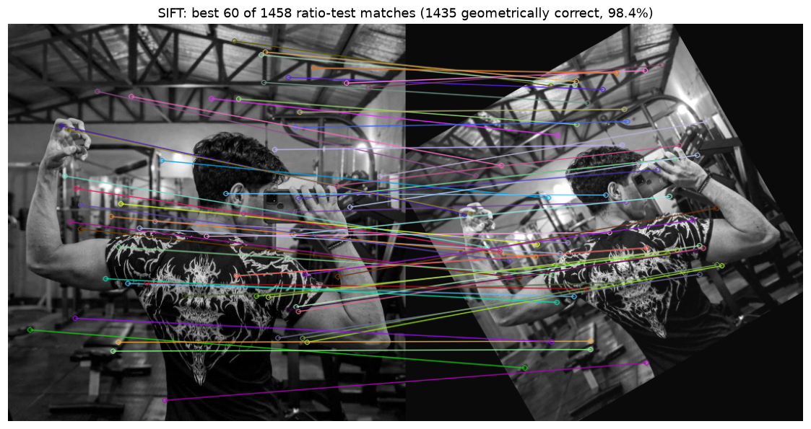
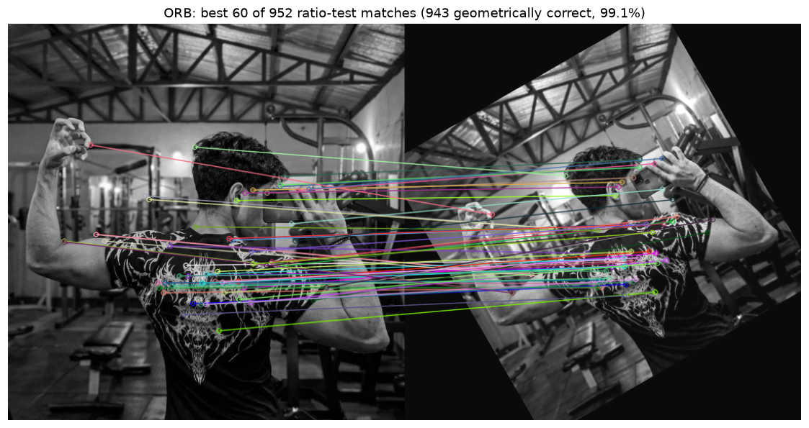
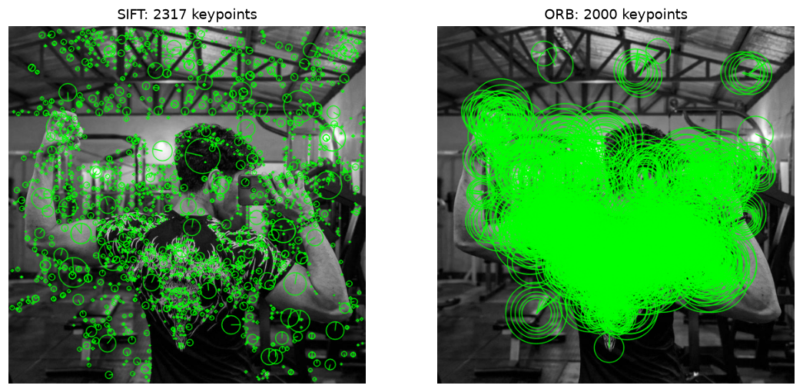
| Method | Keypoints (img1 / img2) | Descriptor | Good matches (ratio test) | Geometrically correct | Detect + describe, 2 images | Matching |
|---|---|---|---|---|---|---|
| SURF | not available in this OpenCV build (patented, nonfree). Literature values are discussed in Q3. | |||||
| SIFT | 2317 / 2089 | 128-D float32 (512 bytes) | 1458 | 1435 (98.4%) | 286.7 ms | 70.6 ms |
| ORB | 2000 / 2000 | 256-bit binary (32 bytes) | 952 | 943 (99.1%) | 27.3 ms | 24.9 ms |
Both detectors survive a 30° rotation, 0.8× scaling and brightness change with about 98–99% correct matches. ORB detects and describes 10.5× faster than SIFT, and its matching is also faster even though both images have a similar number of keypoints (ORB 2000 / 2000, SIFT 2317 / 2089): Hamming distance on 32 bytes is much cheaper than L2 distance on 128 floats. SIFT, however, found about 1.5× more good matches, spread over the whole photo, while ORB’s matches are concentrated on the shirt print. For estimating a transform, well-spread matches are more reliable.
Lab activity 3: U-SURF (upright mode)
U-SURF (SURF_create(hessianThreshold, upright=True)) skips orientation assignment and describes every keypoint in the image’s own x/y axes. We reproduced the same idea with SIFT by forcing every keypoint angle to 0 (“upright SIFT”). We then measured correct matches as the second image is rotated by increasing angles (scale 1.0):
| Rotation | 0° | 5° | 10° | 20° | 45° | 90° |
|---|---|---|---|---|---|---|
| Rotation-invariant (oriented SIFT) | 2231 | 1634 | 1591 | 1597 | 1548 | 2018 |
| Upright (U-SURF idea) | 1862 | 1453 | 1264 | 48 | 0 | 0 |
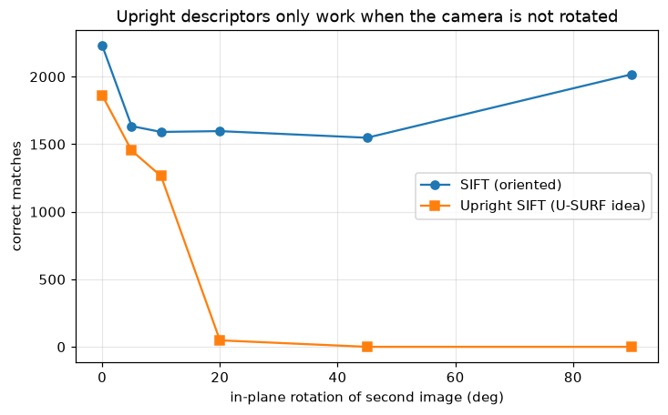
Observations. When the camera is not rotated, the upright version performs almost as well. The slightly lower count at 0° is only because SIFT creates duplicate keypoints for secondary orientations, and we removed those. Upright descriptors also skip the orientation computation, which is why U-SURF is faster (about 15% in the original SURF paper), and they are more discriminative because no orientation-estimation error is introduced. Beyond about 15–20° of rotation, the descriptor grids no longer align and matching fails completely (48 → 0 → 0 correct). U-SURF is therefore the right choice when orientation invariance is not needed: cameras that stay upright, such as street-level or robot navigation, panorama stitching from a tripod, or aerial images already aligned to north.
Questions for students
1. What effect does changing the Hessian threshold have on the number of detected keypoints?
The Hessian threshold is the minimum blob response (determinant of the Hessian) a point must have to be accepted as a keypoint, so raising the threshold reduces the number of keypoints, and lowering it increases them. In our run the count fell from 4133 → 2824 → 1580 → 388 → 22 as the threshold went 0.0005 → 0.01 (at 0.02 no keypoint was left at all), roughly exponentially, because there are many weak blobs and only a few strong ones.
- Low threshold: many keypoints, including weak ones on noise and low-contrast texture. These are less repeatable, increase descriptor and matching time, and produce more false matches.
- High threshold: few, strong and highly repeatable keypoints on distinctive blobs, so matching is faster. But if too high (22 keypoints, or none at 0.02) there may not be enough points to match or estimate a homography reliably, especially in low-texture images.
- In OpenCV’s real SURF the value is on a different scale (typical values 300–500; the handout uses 400), but the behaviour is exactly the same. The threshold is the main knob for trading quantity and speed against quality.
2. What are the descriptors in SURF used for, and why are they important?
A keypoint only says where an interesting point is. The descriptor says what it looks like. A SURF descriptor is a 64-element (or 128 in extended mode) vector of Haar-wavelet responses (Σdx, Σ|dx|, Σdy, Σ|dy| for each of 4 × 4 sub-regions), computed in a window aligned with the keypoint’s scale and orientation and normalized to unit length.
Uses: comparing descriptors (Euclidean distance + ratio test) finds corresponding points between images. This is the basis of object recognition, image stitching and panoramas, 3-D reconstruction / structure-from-motion, visual SLAM and robot localization, tracking, and image retrieval.
Why they are important:
- They are distinctive: different points give different vectors, so the correct partner can be found among thousands.
- They are invariant to scale (window size follows the keypoint scale), rotation (window aligned with the dominant orientation), and brightness and contrast changes (gradients are offset-invariant and the vector is normalized).
- They are compact (64 numbers instead of hundreds of pixels), so matching is fast.
Our matching experiment shows this in practice: after a 30° rotation, 0.8× scaling and brightness change, descriptor matching still produced about 98% geometrically correct matches.
3. How does SURF compare to SIFT and ORB in feature detection and speed?
| SIFT (2004) | SURF (2006) | ORB (2011) | |
|---|---|---|---|
| Detector | Difference of Gaussians on an image pyramid | Determinant of Hessian with box filters + integral images | FAST corners on a pyramid + Harris ranking |
| Features found | Blobs at many scales; very repeatable | Blobs; similar to SIFT | Corners; clustered on high-contrast areas |
| Orientation | Gradient histogram | Haar responses (or none for U-SURF) | Intensity centroid |
| Descriptor | 128-D float (gradient histograms) | 64-D float (Haar sums) | 256-bit binary (rotated BRIEF) |
| Matching distance | L2 | L2 (+ Laplacian-sign pre-check) | Hamming (XOR + popcount) |
| Speed | Slowest | About 3× faster than SIFT (Bay et al.) | About an order of magnitude faster than SIFT; real-time on mobile |
| Robustness | Best for scale, rotation and viewpoint | Close to SIFT, slightly weaker under large viewpoint or rotation change; good under blur | Good rotation invariance, weaker under large scale changes; less distinctive |
| Licence | Patent expired in 2020; now in main OpenCV | Patented, “nonfree” (that is why it is missing here) | Free (BSD) |
Our measurements: SIFT needed 286.7 ms to detect and describe two 540 × 540 images, while ORB needed 27.3 ms (≈10.5× faster), with comparable accuracy on this transform (SIFT 98.4%, ORB 99.1% correct matches). SURF sits between them: it was designed to give SIFT-like accuracy at a fraction of the cost by using integral images and a shorter 64-D descriptor. ORB is faster still and free, and its binary descriptors make matching cheap.
In summary: choose SIFT for maximum accuracy, SURF for a speed/accuracy compromise (where licensing allows), and ORB for real-time or embedded applications.
Conclusion
SURF detects blob-like keypoints with a fast determinant-of-Hessian detector built on integral images and describes them with compact 64-D Haar-wavelet descriptors. The Hessian threshold directly controls how many keypoints are kept: a higher threshold gives fewer, stronger features (4133 → 22 in our sweep). Descriptors make it possible to match the same physical points across images despite rotation, scaling and lighting changes. Our SIFT and ORB matchers both achieved about 98% correct matches on a rotated, scaled and brightened view, with ORB about 10.5× faster at detection. The upright experiment showed the U-SURF trade-off: skipping orientation is faster and works for near-upright views, but matching collapses beyond about 15–20° of rotation. Because SURF is patented and missing from the standard OpenCV builds, SIFT (now free) or ORB are the practical choices today, while SURF’s ideas (integral images, box-filter Hessian, Haar descriptors) remain important in feature detection.
Laboratory Experiment 5: Facial Recognition with PCA (Eigenfaces) and SVM
Objectives
- Load, flatten and preprocess high-dimensional image data for mathematical modeling.
- Apply PCA to extract the most significant variance features (Eigenfaces) from a dataset.
- Quantify the trade-off between the number of principal components and information retention (cumulative explained variance).
- Train a Support Vector Machine to recognize individuals using only their PCA projections.
Theory in brief
Each 50 × 37 face is flattened into a vector x ∈ ℝ1850. PCA subtracts the mean face μ and finds orthonormal directions w1, w2, … (eigenvectors of the covariance matrix C = (1/n)·Σ(x−μ)(x−μ)T, sorted by eigenvalue λi) along which the data varies most. Projecting onto the first k directions gives the compact code z = WkT(x − μ), and the face can be approximately reconstructed as x ≈ μ + Wkz. Reshaped to 50 × 37, the vectors wi look like ghostly faces, which is why they are called Eigenfaces. An RBF-kernel SVM then classifies the 150-number codes instead of 1850 raw pixels.
Code (Tasks 1–4 + post-lab analysis)
Source code: lab05_pca_eigenfaces.py (200 lines) download
"""Lab 5 - Facial Recognition using PCA (Eigenfaces) + SVM on LFW.""" import os import time import numpy as np import matplotlib matplotlib.use("Agg") import matplotlib.pyplot as plt from sklearn.datasets import fetch_lfw_people from sklearn.model_selection import train_test_split, GridSearchCV from sklearn.decomposition import PCA from sklearn.svm import SVC from sklearn.metrics import classification_report, confusion_matrix, accuracy_score HERE = os.path.dirname(os.path.abspath(__file__)) OUT = os.path.join(HERE, "..", "site", "img") os.makedirs(OUT, exist_ok=True) def save(name): plt.savefig(os.path.join(OUT, name), dpi=110, bbox_inches="tight") plt.close() # =========================================================================== # Task 1: Data acquisition and preprocessing # =========================================================================== print("Downloading LFW dataset (this may take a moment)...") lfw_people = fetch_lfw_people(min_faces_per_person=70, resize=0.4, data_home=os.path.join(HERE, "data", "sklearn")) n_samples, h, w = lfw_people.images.shape X = lfw_people.data # each row = one flattened h*w face y = lfw_people.target # integer identity label target_names = lfw_people.target_names n_classes = target_names.shape[0] print("Total dataset size:") print(f"n_samples: {n_samples}") print(f"n_features: {X.shape[1]} ({h}x{w} pixels)") print(f"n_classes: {n_classes}") for i, name in enumerate(target_names): print(f" {i}: {name:20s} {np.sum(y == i)} images") # 80 % train / 20 % test X_train, X_test, y_train, y_test = train_test_split(X, y, test_size=0.2, random_state=42) print(f"X_train {X_train.shape}, X_test {X_test.shape}") # =========================================================================== # Task 2: Computing the principal components # =========================================================================== n_components = 150 print(f"Extracting the top {n_components} eigenfaces from {X_train.shape[0]} faces...") t0 = time.time() # Fit ONLY on training data so no information leaks from the test set. pca = PCA(n_components=n_components, svd_solver="randomized", whiten=True, random_state=42).fit(X_train) print(f"Done in {time.time() - t0:.3f}s") X_train_pca = pca.transform(X_train) X_test_pca = pca.transform(X_test) print(f"X_train_pca {X_train_pca.shape}, X_test_pca {X_test_pca.shape}") print(f"variance retained by 150 components: {pca.explained_variance_ratio_.sum():.4f}") evr = pca.explained_variance_ratio_ print(f"explained variance ratio PC1={evr[0]:.4f} PC2={evr[1]:.4f} PC3={evr[2]:.4f} (first 3 together {evr[:3].sum():.4f})") print(f"explained variance ratio last 3 = {np.round(evr[-3:], 5)}") # =========================================================================== # Task 3: Visualising the eigenfaces # =========================================================================== eigenfaces = pca.components_.reshape((n_components, h, w)) def plot_gallery(images, titles, h, w, n_row=3, n_col=4, fname=None): """Helper function to plot a gallery of portraits""" plt.figure(figsize=(1.8 * n_col, 2.4 * n_row)) plt.subplots_adjust(bottom=0, left=.01, right=.99, top=.90, hspace=.35) for i in range(n_row * n_col): plt.subplot(n_row, n_col, i + 1) plt.imshow(images[i].reshape((h, w)), cmap=plt.cm.gray) plt.title(titles[i], size=10) plt.xticks(()) plt.yticks(()) save(fname) eigenface_titles = [f"eigenface {i}" for i in range(eigenfaces.shape[0])] plot_gallery(eigenfaces, eigenface_titles, h, w, fname="lab05_eigenfaces.png") # Mean face + first 3 vs last 3 eigenfaces (for Q2) plot_gallery(np.concatenate([pca.mean_[None], pca.components_[:3], pca.components_[-4:]]), ["mean face", "eigenface 0", "eigenface 1", "eigenface 2", "eigenface 146", "eigenface 147", "eigenface 148", "eigenface 149"], h, w, n_row=2, n_col=4, fname="lab05_first_vs_last.png") # =========================================================================== # Task 4: Face recognition in the reduced space # =========================================================================== print("Fitting the classifier to the training set") t0 = time.time() clf = SVC(kernel="rbf", class_weight="balanced").fit(X_train_pca, y_train) print(f"Done in {time.time() - t0:.3f}s") print("Predicting people's names on the test set") y_pred = clf.predict(X_test_pca) print(classification_report(y_test, y_pred, target_names=target_names, zero_division=0)) print(f"accuracy (default SVC) = {accuracy_score(y_test, y_pred):.4f}") # Improvement: tune C and gamma with 5-fold cross-validation on the TRAINING set only param_grid = {"C": [1, 5, 10, 50, 100, 1000], "gamma": [0.0005, 0.001, 0.005, 0.01, "scale"]} t0 = time.time() grid = GridSearchCV(SVC(kernel="rbf", class_weight="balanced"), param_grid, cv=5, n_jobs=-1).fit(X_train_pca, y_train) print(f"GridSearch done in {time.time() - t0:.1f}s, best params: {grid.best_params_}, " f"cv acc={grid.best_score_:.4f}") y_pred_tuned = grid.predict(X_test_pca) print(classification_report(y_test, y_pred_tuned, target_names=target_names, zero_division=0)) print(f"accuracy (tuned SVC) = {accuracy_score(y_test, y_pred_tuned):.4f}") cm = confusion_matrix(y_test, y_pred_tuned) plt.figure(figsize=(7.5, 6.2)) plt.imshow(cm, cmap="Blues") short = [n.split()[-1] for n in target_names] plt.xticks(range(n_classes), short, rotation=45, ha="right"); plt.yticks(range(n_classes), short) for i in range(n_classes): for j in range(n_classes): plt.text(j, i, cm[i, j], ha="center", va="center", color="white" if cm[i, j] > cm.max() / 2 else "black") plt.xlabel("predicted"); plt.ylabel("true"); plt.title("Confusion matrix (tuned SVC)"); plt.colorbar() save("lab05_confusion.png") # =========================================================================== # Post-lab Q1: Dimensionality vs variance # =========================================================================== pca_full = PCA(svd_solver="full").fit(X_train) # all components, for the full curve cum = pca_full.explained_variance_ratio_.cumsum() k90 = int(np.argmax(cum >= 0.90)) + 1 k95 = int(np.argmax(cum >= 0.95)) + 1 k99 = int(np.argmax(cum >= 0.99)) + 1 print(f"components for 90% variance: {k90}, 95%: {k95}, 99%: {k99}; " f"100 components keep {cum[99]:.4f}, 150 components keep {cum[149]:.4f}") plt.figure(figsize=(8.5, 4.8)) plt.plot(np.arange(1, len(cum) + 1), cum, color="navy") plt.axhline(0.90, color="crimson", ls="--", lw=1) plt.axvline(k90, color="crimson", ls="--", lw=1) plt.annotate(f"90 % at k = {k90}", (k90, 0.90), xytext=(k90 + 60, 0.72), arrowprops=dict(arrowstyle="->"), color="crimson") plt.axvline(150, color="green", ls=":", lw=1); plt.text(155, 0.45, f"k=150 -> {cum[149]:.1%}", color="green") plt.xscale("log"); plt.xlabel("number of components (log scale)"); plt.ylabel("cumulative explained variance") plt.title("Cumulative explained variance - LFW (70+ faces/person)"); plt.grid(alpha=0.3, which="both") save("lab05_cumvar.png") # Reconstructions with an increasing number of components (information loss) face = X_test[0] recon_imgs, recon_titles = [face], ["original (1850-D)"] for k in [10, 50, 150, k90]: p = PCA(n_components=k, svd_solver="randomized", random_state=42).fit(X_train) rec = p.inverse_transform(p.transform(face[None]))[0] recon_imgs.append(rec); recon_titles.append(f"k={k}") plot_gallery(recon_imgs, recon_titles, h, w, n_row=1, n_col=5, fname="lab05_reconstruction.png") # Whitening check (Q3): variance of each projected feature p_nw = PCA(n_components=150, svd_solver="randomized", whiten=False, random_state=42).fit(X_train) var_nw = p_nw.transform(X_train).var(axis=0) var_w = X_train_pca.var(axis=0) print(f"un-whitened PC variances: first={var_nw[0]:.1f}, last={var_nw[-1]:.3f}, ratio={var_nw[0] / var_nw[-1]:.0f}x") print(f"whitened PC variances: first={var_w[0]:.3f}, last={var_w[-1]:.3f}") clf_nw = SVC(kernel="rbf", class_weight="balanced").fit(p_nw.transform(X_train), y_train) acc_nw = accuracy_score(y_test, clf_nw.predict(p_nw.transform(X_test))) print(f"accuracy WITHOUT whitening (default SVC) = {acc_nw:.4f} vs WITH whitening = " f"{accuracy_score(y_test, y_pred):.4f}") # =========================================================================== # Post-lab Q4: Failure analysis # =========================================================================== wrong = np.where(y_pred_tuned != y_test)[0] print(f"misclassified test faces: {len(wrong)} / {len(y_test)}") n_show = min(12, len(wrong)) titles = [f"pred: {target_names[y_pred_tuned[i]].split()[-1]}\ntrue: {target_names[y_test[i]].split()[-1]}" for i in wrong[:n_show]] plot_gallery(X_test[wrong[:n_show]], titles, h, w, n_row=int(np.ceil(n_show / 6)), n_col=6, fname="lab05_failures.png") # Quantitative hints for the hypotheses: brightness, contrast, left/right lighting asymmetry, # and reconstruction error (how "face-like" the image is for this PCA model) def describe(idx): f = X_test[idx].reshape(h, w) asym = f[:, : w // 2].mean() - f[:, w // 2:].mean() rec = pca.inverse_transform(pca.transform(X_test[idx][None]))[0] return f.mean(), f.std(), abs(asym), np.linalg.norm(X_test[idx] - rec) ok = np.where(y_pred_tuned == y_test)[0] d_wrong = np.array([describe(i) for i in wrong]) d_ok = np.array([describe(i) for i in ok]) for k, name in enumerate(["mean brightness", "contrast (std)", "|left-right lighting asym|", "PCA recon. error"]): print(f"{name:28s} wrong={d_wrong[:, k].mean():7.2f} correct={d_ok[:, k].mean():7.2f}") for i in wrong[:n_show]: print(f" test idx {i:3d}: true={target_names[y_test[i]]:18s} pred={target_names[y_pred_tuned[i]]}") # Which classes are confused most? (class imbalance) counts = np.bincount(y_train, minlength=n_classes) for i, n in enumerate(target_names): print(f" train images {n:20s} {counts[i]}")
Program output
Output of lab05.py (saved in lab05_output.txt)
Downloading LFW dataset (this may take a moment)...
Total dataset size:
n_samples: 1288
n_features: 1850 (50x37 pixels)
n_classes: 7
0: Ariel Sharon 77 images
1: Colin Powell 236 images
2: Donald Rumsfeld 121 images
3: George W Bush 530 images
4: Gerhard Schroeder 109 images
5: Hugo Chavez 71 images
6: Tony Blair 144 images
X_train (1030, 1850), X_test (258, 1850)
Extracting the top 150 eigenfaces from 1030 faces...
Done in 0.307s
X_train_pca (1030, 150), X_test_pca (258, 150)
variance retained by 150 components: 0.9456
explained variance ratio PC1=0.2074 PC2=0.1411 PC3=0.0667 (first 3 together 0.4152)
explained variance ratio last 3 = [0.00044 0.00043 0.00043]
Fitting the classifier to the training set
Done in 0.238s
Predicting people's names on the test set
precision recall f1-score support
Ariel Sharon 1.00 0.64 0.78 11
Colin Powell 0.63 0.96 0.76 47
Donald Rumsfeld 0.83 0.68 0.75 22
George W Bush 0.94 0.91 0.92 119
Gerhard Schroeder 0.89 0.89 0.89 19
Hugo Chavez 1.00 0.46 0.63 13
Tony Blair 0.95 0.78 0.86 27
accuracy 0.85 258
macro avg 0.89 0.76 0.80 258
weighted avg 0.88 0.85 0.85 258
accuracy (default SVC) = 0.8488
GridSearch done in 21.4s, best params: {'C': 5, 'gamma': 0.005}, cv acc=0.8214
precision recall f1-score support
Ariel Sharon 0.88 0.64 0.74 11
Colin Powell 0.75 0.91 0.83 47
Donald Rumsfeld 0.83 0.68 0.75 22
George W Bush 0.88 0.97 0.92 119
Gerhard Schroeder 1.00 0.84 0.91 19
Hugo Chavez 1.00 0.62 0.76 13
Tony Blair 1.00 0.78 0.88 27
accuracy 0.87 258
macro avg 0.91 0.78 0.83 258
weighted avg 0.88 0.87 0.87 258
accuracy (tuned SVC) = 0.8721
components for 90% variance: 85, 95%: 160, 99%: 386; 100 components keep 0.9147, 150 components keep 0.9460
un-whitened PC variances: first=8.5, last=0.018, ratio=480x
whitened PC variances: first=0.999, last=0.999
accuracy WITHOUT whitening (default SVC) = 0.7946 vs WITH whitening = 0.8488
misclassified test faces: 33 / 258
mean brightness wrong= 0.49 correct= 0.51
contrast (std) wrong= 0.16 correct= 0.16
|left-right lighting asym| wrong= 0.07 correct= 0.08
PCA recon. error wrong= 2.19 correct= 1.76
test idx 13: true=Tony Blair pred=George W Bush
test idx 17: true=George W Bush pred=Colin Powell
test idx 21: true=Donald Rumsfeld pred=George W Bush
test idx 23: true=Donald Rumsfeld pred=George W Bush
test idx 26: true=Donald Rumsfeld pred=Colin Powell
test idx 37: true=George W Bush pred=Colin Powell
test idx 48: true=Donald Rumsfeld pred=George W Bush
test idx 62: true=Colin Powell pred=Ariel Sharon
test idx 65: true=Hugo Chavez pred=George W Bush
test idx 70: true=Hugo Chavez pred=Colin Powell
test idx 93: true=Gerhard Schroeder pred=Colin Powell
test idx 95: true=Hugo Chavez pred=Colin Powell
train images Ariel Sharon 66
train images Colin Powell 189
train images Donald Rumsfeld 99
train images George W Bush 411
train images Gerhard Schroeder 90
train images Hugo Chavez 58
train images Tony Blair 117Task 1 – Data acquisition and preprocessing
LFW with at least 70 images per person gives 1288 images of 7 people. Each image is 50 × 37 = 1850 features. The classes are strongly imbalanced, from George W Bush with 530 images to Hugo Chavez with 71. The 80/20 split gives X_train = (1030, 1850) and X_test = (258, 1850). X holds the flattened images, one row per face and one column per pixel, and y holds the integer identity labels.
Task 2 – Computing the principal components
PCA(n_components=150, svd_solver='randomized', whiten=True) was fitted on the training set only, so no information leaks from the test set. Fitting took 0.31 s. Both sets were transformed to (1030, 150) and (258, 150), a 12.3× reduction that still keeps 94.6% of the variance.
Task 3 – Visualizing the Eigenfaces
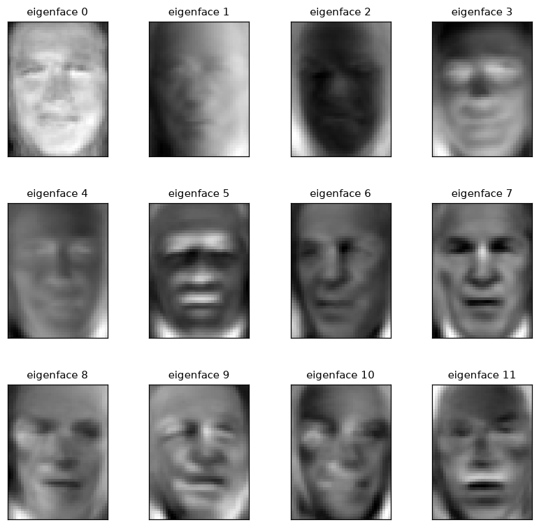
pca.components_ reshaped to 50 × 37).Task 4 – Face recognition in the reduced space
The SVM required by the handout (SVC(kernel='rbf', class_weight='balanced'), default C and γ) reached an accuracy of 84.9% (macro F1 0.80). We also tuned C and γ with a 5-fold GridSearchCV. The best setting was C = 5, γ = 0.005, giving a test accuracy of 87.2% (macro F1 0.83, weighted F1 0.87). The best-recognized person is George W Bush (F1 0.92). Hugo Chavez and Ariel Sharon are hardest (recall 0.62–0.64), because they have the fewest training images.
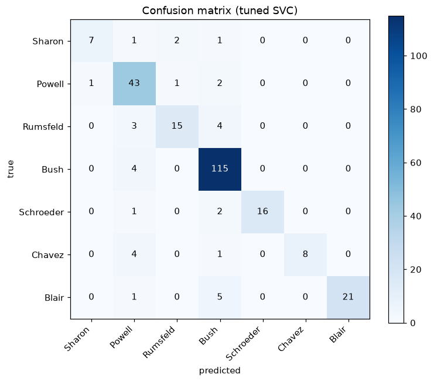
Post-lab analysis
1. Dimensionality vs. variance: plot the cumulative explained variance. How many components are required to retain 90% of the variance?
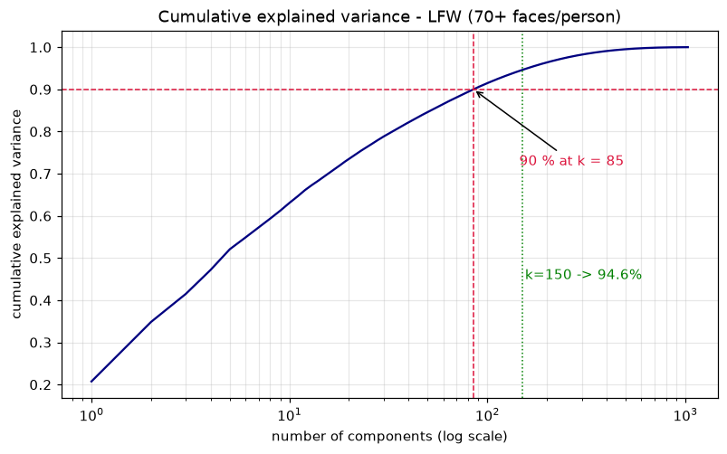
85 components are needed to retain 90% of the variance. That is only 4.6% of the original 1850 dimensions. 95% needs 160 components, 99% needs 386, and our 150 components keep 94.6%. The curve rises very steeply at first, so the first few components capture most of the variation (global illumination and face shape), and then it flattens: each additional component adds only a tiny amount of mostly fine detail and noise. The reconstruction figure shows the same thing: with k = 10 the face is a generic blur, with k = 50 the identity starts to appear, and k = 85 and 150 are already close to the original.
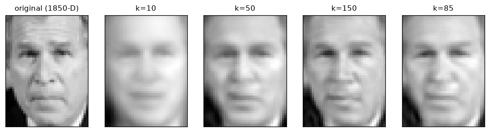
2. Visual interpretation: what do the first 3 eigenfaces capture, and how do they differ from the last 3?
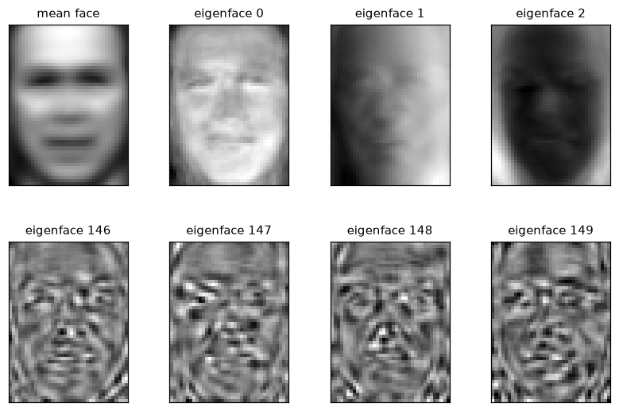
- Eigenface 0 is a smooth, face-shaped bright region: it captures overall face brightness and face-vs-background contrast, i.e. how strongly lit the face is. Together, the first three eigenfaces explain 41.5% of all variance (PC1 20.7%, PC2 14.1%, PC3 6.7%).
- Eigenface 1 is a smooth left-to-right gradient (dark on one side, bright on the other). It captures the lighting direction, i.e. which side of the face is lit, and partly the left/right head turn.
- Eigenface 2 has a dark face with bright surroundings and corners: it captures the face outline / background and hair-jaw region and the top-bottom illumination, i.e. the size and position of the face within the crop.
- All three are low-frequency, global patterns. They describe imaging conditions (illumination, pose, framing) more than identity, because those are the largest sources of pixel variance in LFW.
- The last eigenfaces (146–149) look completely different: high-frequency, speckled, “noisy” patterns concentrated around the eyes, eyebrows, nose and mouth edges. Each explains only a tiny fraction of the variance (about 0.043% each, roughly 480 times less than PC1). They encode fine local details, small misalignments, specific expressions of individual images, and noise. They contribute little to reconstruction, and in the un-whitened space they would almost vanish (variance 0.018 vs 8.5 for PC1).
3. The importance of whitening: what does whitening do mathematically, and why does it help the SVM?
Without whitening, the PCA projection is zi = wiT(x − μ) and its variance equals the eigenvalue λi. With whiten=True, scikit-learn divides each component by its standard deviation, zi = wiT(x − μ) / √λi (in sklearn: components_ scaled by 1/sqrt(explained_variance_)). The projected data then has zero mean, unit variance in every component and no correlation: its covariance matrix is the identity, so the data cloud becomes “spherical”. We verified this: before whitening the variance of PC1 was 8.5 and of PC150 0.018 (a 480× ratio); after whitening, all components had variance 0.999.
Why this helps the SVM. An RBF SVM uses the Euclidean distance ‖z − z′‖² inside exp(−γ‖z − z′‖²). Without whitening, that distance is dominated by the first few components (mostly illumination), which have hundreds of times larger variance, so the discriminative detail in later components is effectively ignored. A single γ also cannot suit both a large-scale and a tiny-scale dimension. Whitening puts every component on the same scale, like standardizing features. This makes the kernel distance treat all components equally, makes one γ appropriate for all dimensions, improves the conditioning of the optimization, and reduces the dominance of lighting. In our experiment, the same default SVC scored 79.5% without whitening vs 84.9% with whitening, a gain of 5.4 percentage points. (Whitening also amplifies low-variance noise components, which is why the number of components is limited, here to 150.)
4. Failure analysis: plot faces where the SVM was wrong and form a hypothesis.
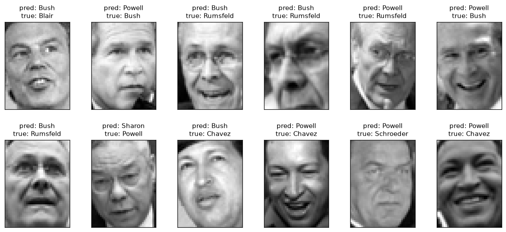
np.where(y_pred != y_test)), with predicted and true name.The tuned SVM misclassified 33 of 258 test faces. Visual inspection of the failures shows recurring causes:
- Pose / head rotation: Blair (turned sideways → “Bush”), Rumsfeld looking up and Chavez with a tilted head. Eigenfaces are pixel-aligned templates. A rotated head moves the eyes, nose and mouth to different pixels, so the projection resembles a different person.
- Strong directional lighting / shadows: the Rumsfeld image with half of the face in shadow. The first eigenfaces encode lighting, so a lighting change moves the point far in PCA space, more than an identity change would.
- Expression: wide laughing or open-mouth expressions (Chavez, Bush) change the mouth and cheek region strongly.
- Accessories and occlusion: glasses (Rumsfeld) add strong edges around the eyes that the training faces of that person may not have.
- Scale and cropping differences: very close crops (Rumsfeld, bottom-left) do not align with the mean face.
Quantitative check. The misclassified faces have a higher PCA reconstruction error (2.19 vs 1.76), i.e. they are less well described by the eigenface space: they are “unusual” faces. Their mean brightness (0.49 vs 0.51) and contrast (0.16 vs 0.16) are almost the same as the correct ones, so global exposure alone is not the cause; local pose, shadow and expression changes are. The wrong predictions are almost always Colin Powell or George W Bush, the two largest classes (189 and 411 training images vs 58 for Chavez). Even with class_weight='balanced', an atypical face tends to fall into the broadest, most varied class regions.
Hypothesis: the eigenface method fails because it is a global, linear, pixel-aligned representation. It assumes faces are frontal, aligned and evenly lit. Pose changes, uneven illumination, expressions and occlusions change many pixels at once, and since the top components mostly encode such nuisance variation, these faces are projected close to the large “average-looking” classes. Remedies: face alignment with landmarks, illumination normalization (CLAHE, discarding the first 1–3 components), more training images per person (augmentation), or non-linear and local features (LBP, HOG, CNN embeddings).
Follow-up questions
1. Why is dimensionality reduction important in computer vision?
Images are extremely high-dimensional: a 100 × 100 gray image is a point in 10,000-D space, and a colour HD frame has millions of values. Dimensionality reduction is important because:
- It fights the curse of dimensionality. With few samples in many dimensions, data becomes sparse, distances lose meaning and models overfit (we have only 1030 training images but 1850 features).
- It reduces computation and memory for training, storage and matching. We used 150 numbers instead of 1850, and the SVM trained in 0.24 s.
- It removes redundancy and noise: neighbouring pixels are highly correlated, and the discarded low-variance directions are largely noise.
- It allows visualization (2-D/3-D plots) and compression.
- It often improves generalization and accuracy, because the classifier focuses on the main structure.
2. What is the difference between the first principal component and the second principal component?
- PC1 is the direction in feature space along which the (centered) data has the largest variance. It is the eigenvector of the covariance matrix with the largest eigenvalue.
- PC2 is the direction of the largest remaining variance under the constraint that it is orthogonal (perpendicular) to PC1. It is the eigenvector with the second-largest eigenvalue. Its scores are uncorrelated with PC1 scores, so it captures new information not already explained by PC1.
- Therefore PC1 always explains at least as much variance as PC2 (λ1 ≥ λ2). In our data PC1 explains 20.7% of the variance and PC2 14.1% (1.47 times less). In our eigenfaces, PC1 captured overall face brightness and face-vs-background contrast, while PC2 captured the left-right lighting direction, a different and independent mode of variation.
3. If PCA reduces an image from 1,000 features to 100 components, what information might be lost?
The information lost is whatever lies in the 900 discarded low-variance directions. The reconstruction error equals the sum of their eigenvalues. Typically this is:
- Fine, high-frequency detail: sharp edges, texture, wrinkles, thin lines. The reconstructed image looks smoother and blurrier, as in our k = 10 and k = 50 reconstructions.
- Small or rare features that appear in few images (a mole, scar, unusual glasses, earrings), because they contribute little to overall variance.
- Noise, which is usually a benefit to lose.
- Possibly discriminative information: PCA keeps high variance, not high class separability. A subtle feature that distinguishes two people may have low variance and be discarded, while lighting differences (high variance, useless for identity) are kept. This is the key limitation compared with supervised methods such as LDA (Fisherfaces).
How much is lost can be measured: for our faces, 100 components keep 91.5% of the variance (measured), so about 8.5% of the pixel variance would be discarded, mostly fine detail.
4. How can PCA be applied to face recognition?
This is the Eigenfaces method (Turk and Pentland, 1991), which is exactly what this lab implemented:
- Collect aligned, same-size face images and flatten each into a vector.
- Compute the mean face and subtract it (centering).
- Compute PCA on the training faces. The top-k eigenvectors are the eigenfaces, forming a “face space”.
- Project each known face onto the face space to get a short weight vector (its signature).
- For a new face, subtract the mean, project it, and compare its weights with the stored ones: either nearest neighbour (Euclidean or Mahalanobis distance) or, as here, a trained classifier such as an SVM. We got 87.2% accuracy over 7 people.
- Optionally use the reconstruction error (distance from face space) to reject non-faces or unknown people.
Advantages: simple, fast, compact storage. Limitations: sensitive to lighting, pose, expression and alignment (see the failure analysis). Modern systems use deep CNN embeddings, but PCA remains useful for compression and preprocessing.
5. Why should image features generally be centered before applying PCA?
- PCA finds directions of maximum variance, i.e. spread around the mean. The covariance matrix is defined on mean-subtracted data, C = (1/n)·Σ(x − μ)(x − μ)T.
- If the data is not centered, the SVD/eigen-decomposition of XᵀX measures spread around the origin. The first component then simply points toward the mean (for images, the “average brightness” direction, since all pixel values are positive). This wastes a component and distorts all the following orthogonal components.
- Centering makes the components describe how faces differ from the average face, which is the useful information. Reconstruction is then x ≈ μ + Σ ziwi.
- scikit-learn’s
PCAcenters automatically (pca.mean_, shown as the “mean face” in the figure). The same training mean must be subtracted from test images, whichtransform()does. - When features have different units or ranges, they should also be scaled (standardized), otherwise large-range features dominate. Pixels share the same 0–255 scale, so centering is sufficient here.
Conclusion
PCA turned 1850-pixel face images into compact 150-number codes that keep 94.6% of the variance. 90% of the variance needs only 85 components, showing how redundant raw pixels are. The leading eigenfaces capture global illumination, lighting direction and face framing, while the last ones capture fine detail and noise. Whitening was essential for the RBF-SVM, raising accuracy from 79.5% to 84.9% by giving every component equal weight. Tuning C and γ raised it to 87.2% on 7 identities. The failure analysis showed the limits of a linear, pixel-aligned representation: faces with unusual pose, side lighting, strong expressions or glasses have higher reconstruction error and are usually assigned to the largest classes. Eigenfaces with an SVM are a fast, interpretable baseline for face recognition, and dimensionality reduction is a key tool against the curse of dimensionality in computer vision.
Laboratory Experiment 6: Object Detection with YOLOv11
Objective
To use YOLOv11 for object detection and to train a custom model: run inference with a pre-trained YOLOv11 model, prepare and annotate a dataset in YOLO format, train (fine-tune) YOLOv11 on it, and evaluate and test the trained model by interpreting its training and evaluation metrics.
- Model file name. The handout writes
YOLOv11n.pt, but the official Ultralytics weight file isyolo11n.pt(no “v”).YOLO('YOLOv11n.pt')fails because that file does not exist. All commands below use the correct name. - Hardware. Everything ran on a laptop CPU (Intel Core i3-8130U, no GPU). We therefore trained for 15 epochs at 320 px instead of the handout’s 100 epochs at 640 px. The procedure is identical; only those two numbers change, and they are parameters of the same command.
- Webcam (Part 1). The real-time webcam script is included below (
lab06_webcam.py), but the computer used to generate this page has no camera. Part 1 detection was therefore run with the same pre-trained model on two standard photographs, measuring speed per frame. - Custom dataset (Part 2). Instead of photos labelled by hand in LabelImg/Roboflow, the script generates a dataset of three object classes (circle, square, triangle) on cluttered, noisy backgrounds and writes labels in exactly the format those tools export. This makes the whole pipeline reproducible. With real photos, only the images and
.txtfiles change.
Code
Source code: lab06_yolo.py (176 lines) download
"""Lab 6 - Object Detection with YOLO11: pre-trained inference, custom dataset, training, validation and testing. Note: the handout writes the weights as 'YOLOv11n.pt'; the real Ultralytics file name is 'yolo11n.pt' (no "v"), otherwise the download fails. Part 2 needs annotated images. Instead of hand-labelling photos in LabelImg/Roboflow, this script GENERATES a small custom dataset (circles, squares, triangles on cluttered backgrounds) and writes the labels in exactly the YOLO format a labelling tool would export, so the whole pipeline (prepare -> train -> validate -> infer) runs end to end. """ import os import shutil import time import cv2 import numpy as np import matplotlib matplotlib.use("Agg") import matplotlib.pyplot as plt from ultralytics import YOLO from ultralytics.utils import ASSETS HERE = os.path.dirname(os.path.abspath(__file__)) OUT = os.path.join(HERE, "..", "site", "img") WORK = os.path.join(HERE, "yolo_work") os.makedirs(OUT, exist_ok=True) os.makedirs(WORK, exist_ok=True) os.chdir(WORK) # weights / runs/ are written here def save(name): plt.savefig(os.path.join(OUT, name), dpi=110, bbox_inches="tight") plt.close() # =========================================================================== # Part 1: Pre-trained YOLO11n inference (webcam version: lab06_webcam.py) # =========================================================================== model = YOLO("yolo11n.pt") print("pre-trained classes:", len(model.names), "e.g.", list(model.names.values())[:10]) for src in [str(ASSETS / "bus.jpg"), os.path.join(HERE, "data", "my_photo.jpg")]: name = os.path.basename(src) model(src, verbose=False) # warm-up t0 = time.perf_counter() r = model(src, conf=0.25, verbose=False)[0] ms = (time.perf_counter() - t0) * 1000 print(f"\n{name}: {len(r.boxes)} objects in {ms:.1f} ms (CPU) -> ~{1000 / ms:.1f} FPS") for b in r.boxes: print(f" {model.names[int(b.cls)]:12s} conf={float(b.conf):.2f} box={[int(v) for v in b.xyxy[0]]}") cv2.imwrite(os.path.join(OUT, f"lab06_pretrained_{name.split('.')[0]}.jpg"), r.plot()) # =========================================================================== # Part 2: Prepare a custom dataset in YOLO format # =========================================================================== CLASSES = ["circle", "square", "triangle"] IMG = 320 rng = np.random.default_rng(0) def random_background(): bg = rng.integers(40, 220, size=3).astype(np.uint8) img = np.full((IMG, IMG, 3), bg, np.uint8) for _ in range(rng.integers(5, 15)): # clutter: random lines p1, p2 = rng.integers(0, IMG, 2), rng.integers(0, IMG, 2) cv2.line(img, tuple(int(v) for v in p1), tuple(int(v) for v in p2), tuple(int(v) for v in rng.integers(0, 255, 3)), int(rng.integers(1, 3))) noise = rng.normal(0, 8, img.shape) return np.clip(img + noise, 0, 255).astype(np.uint8) def shape_points(cls, cx, cy, s): """Polygon outline of one object (a circle is approximated by 48 points).""" if cls == 0: t = np.linspace(0, 2 * np.pi, 48, endpoint=False) pts = np.stack([cx + s * np.cos(t), cy + s * np.sin(t)], 1) elif cls == 1: pts = cv2.boxPoints(((cx, cy), (1.7 * s, 1.7 * s), rng.uniform(0, 90))) else: a0 = rng.uniform(0, 2 * np.pi) pts = [[cx + s * np.cos(a0 + k * 2 * np.pi / 3), cy + s * np.sin(a0 + k * 2 * np.pi / 3)] for k in range(3)] return np.round(pts).astype(np.int32) def build_dataset(root, splits): """Write images/<split>/*.jpg and labels/<split>/*.txt in YOLO format.""" if os.path.exists(root): shutil.rmtree(root) for split, n in splits.items(): os.makedirs(f"{root}/images/{split}"); os.makedirs(f"{root}/labels/{split}") for i in range(n): img = random_background() lines, placed = [], [] for _ in range(rng.integers(1, 5)): s = int(rng.integers(14, 45)) for _try in range(30): # avoid overlapping objects cx, cy = (int(v) for v in rng.integers(s + 2, IMG - s - 2, 2)) if all(np.hypot(cx - px, cy - py) > s + ps + 4 for px, py, ps in placed): break else: continue cls = int(rng.integers(0, 3)) pts = shape_points(cls, cx, cy, s) cv2.fillPoly(img, [pts], tuple(int(v) for v in rng.integers(0, 255, 3))) placed.append((cx, cy, s)) x, y, bw, bh = cv2.boundingRect(pts) # tight box around the polygon # class_id x_center y_center width height (all normalised to 0..1) lines.append(f"{cls} {(x + bw / 2) / IMG:.6f} {(y + bh / 2) / IMG:.6f} {bw / IMG:.6f} {bh / IMG:.6f}") cv2.imwrite(f"{root}/images/{split}/{i:04d}.jpg", img) with open(f"{root}/labels/{split}/{i:04d}.txt", "w") as f: f.write("\n".join(lines) + "\n") build_dataset("dataset", {"train": 300, "val": 80}) with open("data.yaml", "w") as f: f.write(f"path: {os.path.abspath('dataset')}\ntrain: images/train\nval: images/val\n" f"nc: {len(CLASSES)}\nnames: {CLASSES}\n") print(open("data.yaml").read()) print("example label file dataset/labels/train/0000.txt:\n" + open("dataset/labels/train/0000.txt").read()) # Visual check: draw the YOLO labels back onto a few training images fig, ax = plt.subplots(2, 4, figsize=(16, 8.4)) for a, i in zip(ax.ravel(), range(8)): img = cv2.imread(f"dataset/images/train/{i:04d}.jpg") for line in open(f"dataset/labels/train/{i:04d}.txt").read().split("\n"): if not line.strip(): continue c, xc, yc, bw, bh = line.split(); c = int(c) xc, yc, bw, bh = (float(v) * IMG for v in (xc, yc, bw, bh)) cv2.rectangle(img, (int(xc - bw / 2), int(yc - bh / 2)), (int(xc + bw / 2), int(yc + bh / 2)), (0, 0, 255), 2) cv2.putText(img, CLASSES[c], (int(xc - bw / 2), int(yc - bh / 2) - 3), cv2.FONT_HERSHEY_SIMPLEX, 0.45, (0, 0, 255), 1) a.imshow(img[:, :, ::-1]); a.set_title(f"train/{i:04d}.jpg + labels"); a.axis("off") save("lab06_dataset_samples.png") # =========================================================================== # Part 3: Train YOLO11n on the custom dataset (transfer learning from COCO weights) # CLI equivalent: yolo task=detect mode=train model=yolo11n.pt data=data.yaml epochs=15 imgsz=320 # =========================================================================== EPOCHS = int(os.environ.get("YOLO_EPOCHS", 15)) t0 = time.time() model = YOLO("yolo11n.pt") model.train(data="data.yaml", epochs=EPOCHS, imgsz=IMG, batch=16, device="cpu", workers=0, project=os.path.abspath("runs"), name="train", exist_ok=True, plots=True, seed=0, verbose=False) print(f"training time: {(time.time() - t0) / 60:.1f} min for {EPOCHS} epochs") run = str(model.trainer.save_dir) # where Ultralytics actually saved the run print("run directory:", os.path.relpath(run)) for f in ["results.png", "confusion_matrix.png", "BoxPR_curve.png", "PR_curve.png", "val_batch0_pred.jpg"]: if os.path.exists(f"{run}/{f}"): shutil.copy(f"{run}/{f}", os.path.join(OUT, f"lab06_{f}")) print("run files:", sorted(os.listdir(run))) # =========================================================================== # Part 4: Evaluate (val) and use the trained model on NEW images # CLI equivalent: yolo task=detect mode=val model=runs/train/weights/best.pt data=data.yaml # =========================================================================== best = YOLO(f"{run}/weights/best.pt") metrics = best.val(data="data.yaml", imgsz=IMG, device="cpu", workers=0, plots=False, verbose=False) print(f"\nVALIDATION precision={metrics.box.mp:.3f} recall={metrics.box.mr:.3f} " f"mAP50={metrics.box.map50:.3f} mAP50-95={metrics.box.map:.3f}") for i, c in enumerate(CLASSES): p, r, ap50, ap = metrics.box.class_result(i) print(f" {c:9s} P={p:.3f} R={r:.3f} AP50={ap50:.3f} AP50-95={ap:.3f}") # Brand-new test images that were never seen during training or validation build_dataset("testset", {"test": 8}) fig, ax = plt.subplots(2, 4, figsize=(16, 8.4)) for a, i in zip(ax.ravel(), range(8)): res = best(f"testset/images/test/{i:04d}.jpg", conf=0.4, verbose=False)[0] a.imshow(res.plot()[:, :, ::-1]); a.set_title(f"new image {i}: {len(res.boxes)} detections"); a.axis("off") save("lab06_custom_predictions.png") # Also show the model on a real-world photo where these shapes do not exist (expected: no / few detections) res = best(str(ASSETS / "bus.jpg"), conf=0.4, verbose=False)[0] print("custom model on bus.jpg ->", len(res.boxes), "detections (it only knows circle/square/triangle)")
Source code: lab06_webcam.py (41 lines) download
"""Lab 6 - Part 1: real-time object detection from a webcam with pre-trained YOLO11n. Run: python lab06_webcam.py (press q to quit) """ import time import cv2 from ultralytics import YOLO model = YOLO("yolo11n.pt") # downloads the COCO-pretrained weights on first run (80 classes) cap = cv2.VideoCapture(0) # 0 = default webcam if not cap.isOpened(): raise RuntimeError("Cannot open webcam") prev = time.time() while True: ok, frame = cap.read() if not ok: break results = model(frame, conf=0.4, verbose=False)[0] # Draw every detection: box + "label confidence" for box in results.boxes: x1, y1, x2, y2 = map(int, box.xyxy[0]) cls_id, conf = int(box.cls[0]), float(box.conf[0]) label = f"{model.names[cls_id]} {conf:.2f}" cv2.rectangle(frame, (x1, y1), (x2, y2), (0, 255, 0), 2) (tw, th), _ = cv2.getTextSize(label, cv2.FONT_HERSHEY_SIMPLEX, 0.6, 2) cv2.rectangle(frame, (x1, y1 - th - 8), (x1 + tw + 4, y1), (0, 255, 0), -1) cv2.putText(frame, label, (x1 + 2, y1 - 5), cv2.FONT_HERSHEY_SIMPLEX, 0.6, (0, 0, 0), 2) now = time.time() fps = 1.0 / (now - prev); prev = now cv2.putText(frame, f"FPS: {fps:.1f} objects: {len(results.boxes)}", (10, 30), cv2.FONT_HERSHEY_SIMPLEX, 0.8, (0, 0, 255), 2) cv2.imshow("YOLO11n real-time detection", frame) if cv2.waitKey(1) & 0xFF == ord("q"): break cap.release() cv2.destroyAllWindows()
Program output
Output of lab06.py (saved in lab06_output.txt)
pre-trained classes: 80 e.g. ['person', 'bicycle', 'car', 'motorcycle', 'airplane', 'bus', 'train', 'truck', 'boat', 'traffic light']
bus.jpg: 5 objects in 186.8 ms (CPU) -> ~5.4 FPS
bus conf=0.94 box=[3, 229, 796, 728]
person conf=0.89 box=[671, 394, 809, 878]
person conf=0.88 box=[47, 399, 239, 904]
person conf=0.86 box=[223, 408, 344, 860]
person conf=0.62 box=[0, 556, 68, 872]
my_photo.jpg: 2 objects in 191.9 ms (CPU) -> ~5.2 FPS
person conf=0.88 box=[25, 292, 1050, 1077]
cell phone conf=0.67 box=[692, 445, 800, 543]
path: <workspace>\labs\yolo_work\dataset
train: images/train
val: images/val
nc: 3
names: ['circle', 'square', 'triangle']
example label file dataset/labels/train/0000.txt:
1 0.704688 0.232813 0.128125 0.128125
1 0.482812 0.520312 0.090625 0.090625
Ultralytics 8.4.219 Python-3.14.6 torch-2.15.0+cpu CPU (Intel Core i3-8130U 2.20GHz)
engine\trainer: epochs=..., imgsz=..., batch=... (full argument list omitted)
Overriding model.yaml nc=80 with nc=3
[layer-by-layer model table omitted]
YOLO11n summary: 181 layers, 2,590,425 parameters, 2,590,409 gradients, 6.5 GFLOPs
Transferred 493/499 items from pretrained weights
Freezing layer 'model.23.dfl.conv.weight'
WARNING train: Slow image access detected (ping: 0.1±0.1 ms, read: 2.0±0.9 MB/s, size: 48.7 KB). Use local storage instead of remote/mounted storage for better performance. See https://docs.ultralytics.com/guides/model-training-tips
train: Scanning <workspace>\labs\yolo_work\dataset\labels\train... 300 images, 0 backgrounds, 0 corrupt
train: New cache created: <workspace>\labs\yolo_work\dataset\labels\train.cache
WARNING val: Slow image access detected (ping: 0.1±0.0 ms, read: 3.1±2.2 MB/s, size: 48.7 KB). Use local storage instead of remote/mounted storage for better performance. See https://docs.ultralytics.com/guides/model-training-tips
val: Scanning <workspace>\labs\yolo_work\dataset\labels\val... 80 images, 0 backgrounds, 0 corrupt
val: New cache created: <workspace>\labs\yolo_work\dataset\labels\val.cache
optimizer: 'optimizer=auto' found, ignoring 'lr0=0.01' and determining best 'optimizer' and 'lr0' automatically...
optimizer: AdamW(lr=0.001429, momentum=0.9) with parameter groups 81 weight(decay=0.0), 88 weight(decay=0.0005), 87 bias(decay=0.0)
Plotting labels to <workspace>\labs\yolo_work\runs\train\labels.jpg...
Using 300 train, 80 val images for fraction=1.0 at imgsz=320
Using 0 dataloader workers
Logging results to <workspace>\labs\yolo_work\runs\train
Starting training for 15 epochs...
Epoch GPU_mem box_loss cls_loss dfl_loss Instances Size
1/15 0G 0.6585 2.082 0.9648 41 320
Class Images Instances Box(P R mAP50 mAP50-95)
all 80 177 0.806 0.916 0.938 0.837
Epoch GPU_mem box_loss cls_loss dfl_loss Instances Size
2/15 0G 0.5947 0.8175 0.8992 48 320
Class Images Instances Box(P R mAP50 mAP50-95)
all 80 177 0.951 0.939 0.987 0.907
Epoch GPU_mem box_loss cls_loss dfl_loss Instances Size
3/15 0G 0.576 0.6806 0.8769 46 320
Class Images Instances Box(P R mAP50 mAP50-95)
all 80 177 0.911 0.943 0.936 0.83
Epoch GPU_mem box_loss cls_loss dfl_loss Instances Size
4/15 0G 0.593 0.6074 0.8871 44 320
Class Images Instances Box(P R mAP50 mAP50-95)
all 80 177 0.924 0.893 0.99 0.885
Epoch GPU_mem box_loss cls_loss dfl_loss Instances Size
5/15 0G 0.5712 0.5341 0.8872 55 320
Class Images Instances Box(P R mAP50 mAP50-95)
all 80 177 0.992 1 1 0.901
Closing dataloader mosaic
Epoch GPU_mem box_loss cls_loss dfl_loss Instances Size
6/15 0G 0.4489 0.4235 0.8263 38 320
Class Images Instances Box(P R mAP50 mAP50-95)
all 80 177 0.99 0.998 1 0.901
Epoch GPU_mem box_loss cls_loss dfl_loss Instances Size
7/15 0G 0.4153 0.3956 0.8205 31 320
Class Images Instances Box(P R mAP50 mAP50-95)
all 80 177 0.997 0.996 1 0.936
Epoch GPU_mem box_loss cls_loss dfl_loss Instances Size
8/15 0G 0.3816 0.361 0.82 30 320
Class Images Instances Box(P R mAP50 mAP50-95)
all 80 177 0.999 1 1 0.943
Epoch GPU_mem box_loss cls_loss dfl_loss Instances Size
9/15 0G 0.383 0.3604 0.8205 34 320
Class Images Instances Box(P R mAP50 mAP50-95)
all 80 177 0.998 1 1 0.952
Epoch GPU_mem box_loss cls_loss dfl_loss Instances Size
10/15 0G 0.3802 0.3396 0.8159 34 320
Class Images Instances Box(P R mAP50 mAP50-95)
all 80 177 0.997 1 1 0.968
Epoch GPU_mem box_loss cls_loss dfl_loss Instances Size
11/15 0G 0.3375 0.3076 0.8159 34 320
Class Images Instances Box(P R mAP50 mAP50-95)
all 80 177 0.998 1 1 0.969
Epoch GPU_mem box_loss cls_loss dfl_loss Instances Size
12/15 0G 0.3255 0.3053 0.8004 30 320
Class Images Instances Box(P R mAP50 mAP50-95)
all 80 177 0.996 1 1 0.975
Epoch GPU_mem box_loss cls_loss dfl_loss Instances Size
13/15 0G 0.3299 0.2953 0.8118 33 320
Class Images Instances Box(P R mAP50 mAP50-95)
all 80 177 0.998 1 1 0.973
Epoch GPU_mem box_loss cls_loss dfl_loss Instances Size
14/15 0G 0.3268 0.2867 0.8079 25 320
Class Images Instances Box(P R mAP50 mAP50-95)
all 80 177 0.997 1 1 0.967
Epoch GPU_mem box_loss cls_loss dfl_loss Instances Size
15/15 0G 0.3111 0.2756 0.813 33 320
Class Images Instances Box(P R mAP50 mAP50-95)
all 80 177 0.996 0.999 1 0.976
15 epochs completed in 0.428 hours.
Optimizer stripped from <workspace>\labs\yolo_work\runs\train\weights\last.pt, 5.5MB
Optimizer stripped from <workspace>\labs\yolo_work\runs\train\weights\best.pt, 5.5MB
Validating <workspace>\labs\yolo_work\runs\train\weights\best.pt...
Ultralytics 8.4.219 Python-3.14.6 torch-2.15.0+cpu CPU (Intel Core i3-8130U 2.20GHz)
YOLO11n summary (fused): 101 layers, 2,597,537 parameters, 0 gradients, 6.4 GFLOPs
Class Images Instances Box(P R mAP50 mAP50-95)
all 80 177 0.996 0.999 1 0.977
Speed: 1.2ms preprocess, 44.0ms inference, 0.0ms loss, 1.3ms postprocess per image
Results saved to <workspace>\labs\yolo_work\runs\train
training time: 26.1 min for 15 epochs
run directory: runs\train
run files: ['BoxF1_curve.png', 'BoxPR_curve.png', 'BoxP_curve.png', 'BoxR_curve.png', 'args.yaml', 'confusion_matrix.png', 'confusion_matrix_normalized.png', 'labels.jpg', 'results.csv', 'results.png', 'train_batch0.jpg', 'train_batch1.jpg', 'train_batch2.jpg', 'train_batch95.jpg', 'train_batch96.jpg', 'train_batch97.jpg', 'val_batch0_labels.jpg', 'val_batch0_pred.jpg', 'val_batch1_labels.jpg', 'val_batch1_pred.jpg', 'val_batch2_labels.jpg', 'val_batch2_pred.jpg', 'weights']
Ultralytics 8.4.219 Python-3.14.6 torch-2.15.0+cpu CPU (Intel Core i3-8130U 2.20GHz)
YOLO11n summary (fused): 101 layers, 2,597,537 parameters, 0 gradients, 6.4 GFLOPs
val: Fast image access (ping: 0.0±0.0 ms, read: 215.3±29.6 MB/s, size: 50.7 KB)
val: Scanning <workspace>\labs\yolo_work\dataset\labels\val.cache... 80 images, 0 backgrounds, 0 corrupt
Class Images Instances Box(P R mAP50 mAP50-95)
all 80 177 0.996 0.999 1 0.977
Speed: 0.8ms preprocess, 40.9ms inference, 0.0ms loss, 1.2ms postprocess per image
VALIDATION precision=0.996 recall=0.999 mAP50=1.000 mAP50-95=0.977
circle P=0.993 R=1.000 AP50=1.000 AP50-95=0.992
square P=0.995 R=1.000 AP50=1.000 AP50-95=0.992
triangle P=1.000 R=0.998 AP50=1.000 AP50-95=0.946
custom model on bus.jpg -> 1 detections (it only knows circle/square/triangle)Part 1: Real-time object detection with pre-trained YOLOv11n
pip install ultralytics opencv-python installs the library. YOLO("yolo11n.pt") downloads the nano model (2.6 M parameters) pre-trained on COCO, which knows 80 classes (person, bicycle, car, bus, bottle, tie …). The webcam script reads frames with cv2.VideoCapture(0), runs the model on each frame, draws every box with “label confidence”, and shows the FPS.
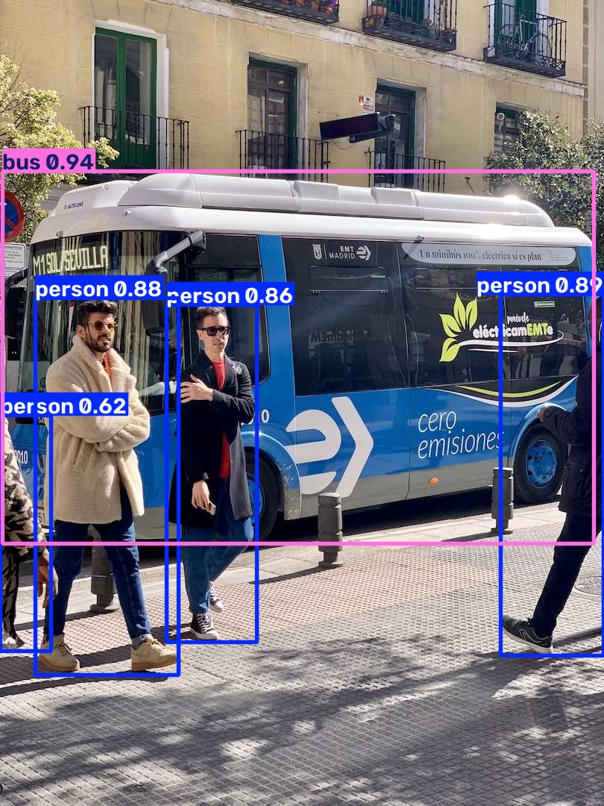
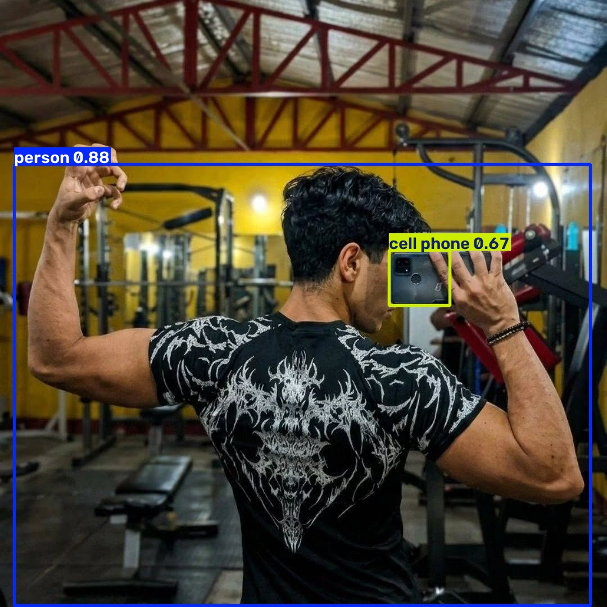
Observations on accuracy and speed.
- Accuracy: large, clearly visible objects are detected with high confidence: the bus at 0.94 and fully visible people at 0.86–0.89. Confidence drops for partly visible or small objects: the person cut off by the left edge of bus.jpg gets 0.62, and the phone in our photo only 0.67 because the fingers cover half of it. Its box covers only the visible part (the camera end), not the part behind the hand. The person box in our photo also misses the top of the raised fist. The dark gym benches in the background, partly hidden and low in contrast, were missed completely. These detections also show that YOLO predicts several classes and several instances at once.
- Speed: on our CPU, one 640 px image took 187 ms (≈ 5.4 FPS) for bus.jpg and 192 ms (≈ 5.2 FPS) for our 1080 × 1080 photo (both are resized to 640 px before inference, so the time is almost the same). That is usable but not smooth real-time on a weak laptop CPU. On a GPU, YOLO11n runs at hundreds of FPS. Real-time speed on a CPU can be improved by using a smaller input size (e.g.
imgsz=320, about 4× fewer pixels) or by exporting to ONNX/OpenVINO. - Pointing the camera at people, cars or bottles works because those are COCO classes. Objects that are not among the 80 classes (e.g. a pen or a specific product) are not detected at all, or are mislabelled as the nearest known class. This is the motivation for training a custom model in Parts 2–4.
Part 2: Preparing a custom dataset (YOLO format)
Collected and annotated: 300 training images and 80 validation images (320 × 320), each with 1–4 non-overlapping objects of 3 classes, random colours, sizes and rotations, on backgrounds with random lines and noise. For every image 0000.jpg there is a label file 0000.txt with one line per object:
class_id x_center y_center width height
1 0.704688 0.232813 0.128125 0.128125 ← a square: centre at (70.5%, 23.3%) of the image, box 12.8% × 12.8%
1 0.482812 0.520312 0.090625 0.090625All four numbers are normalized to 0–1 by the image width and height, so the labels stay valid if the image is resized. Class IDs start at 0 and follow the order of names in data.yaml.
dataset/
├── images/
│ ├── train/ 0000.jpg … 0299.jpg
│ └── val/ 0000.jpg … 0079.jpg
└── labels/
├── train/ 0000.txt … 0299.txt
└── val/ 0000.txt … 0079.txtpath: …/yolo_work/dataset
train: images/train
val: images/val
nc: 3
names: ['circle', 'square', 'triangle']YOLO finds each label automatically by replacing images with labels in the image path and .jpg with .txt. That is why the two folders must mirror each other.
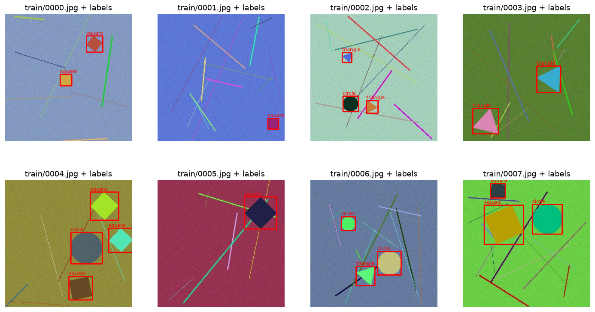
Part 3: Training YOLOv11 on the custom dataset
Command used (CLI equivalent of the Python call in the script):
yolo task=detect mode=train model=yolo11n.pt data=data.yaml epochs=15 imgsz=320Starting from the COCO-pretrained weights is transfer learning. The backbone already knows edges, corners and shapes, so only the detection head needs to be replaced (“Overriding model.yaml nc=80 with nc=3”) and fine-tuned. Training took 26.1 minutes on the CPU. Ultralytics writes everything to the run folder: weights/best.pt (best validation fitness), weights/last.pt, results.csv and the plots below.
Training log (from results.csv)
| Epoch | train box loss | train cls loss | train DFL loss | val box loss | val cls loss | Precision | Recall | mAP50 | mAP50-95 |
|---|---|---|---|---|---|---|---|---|---|
| 1 | 0.659 | 2.082 | 0.965 | 0.472 | 2.349 | 0.806 | 0.916 | 0.938 | 0.837 |
| 2 | 0.595 | 0.817 | 0.899 | 0.441 | 0.888 | 0.951 | 0.939 | 0.987 | 0.907 |
| 3 | 0.576 | 0.681 | 0.877 | 0.491 | 0.986 | 0.911 | 0.943 | 0.936 | 0.830 |
| 4 | 0.593 | 0.607 | 0.887 | 0.489 | 0.769 | 0.924 | 0.893 | 0.990 | 0.885 |
| 5 | 0.571 | 0.534 | 0.887 | 0.468 | 0.487 | 0.992 | 1.000 | 1.000 | 0.901 |
| 6 | 0.449 | 0.424 | 0.826 | 0.451 | 0.410 | 0.990 | 0.998 | 1.000 | 0.901 |
| 7 | 0.415 | 0.396 | 0.821 | 0.373 | 0.381 | 0.997 | 0.996 | 1.000 | 0.936 |
| 8 | 0.382 | 0.361 | 0.820 | 0.348 | 0.330 | 0.999 | 1.000 | 1.000 | 0.943 |
| 9 | 0.383 | 0.360 | 0.820 | 0.351 | 0.324 | 0.998 | 1.000 | 1.000 | 0.952 |
| 10 | 0.380 | 0.340 | 0.816 | 0.297 | 0.294 | 0.997 | 1.000 | 1.000 | 0.968 |
| 11 | 0.337 | 0.308 | 0.816 | 0.288 | 0.268 | 0.998 | 1.000 | 1.000 | 0.969 |
| 12 | 0.326 | 0.305 | 0.800 | 0.275 | 0.256 | 0.996 | 1.000 | 1.000 | 0.975 |
| 13 | 0.330 | 0.295 | 0.812 | 0.256 | 0.240 | 0.998 | 1.000 | 1.000 | 0.973 |
| 14 | 0.327 | 0.287 | 0.808 | 0.254 | 0.230 | 0.997 | 1.000 | 1.000 | 0.967 |
| 15 | 0.311 | 0.276 | 0.813 | 0.236 | 0.220 | 0.996 | 0.999 | 1.000 | 0.976 |
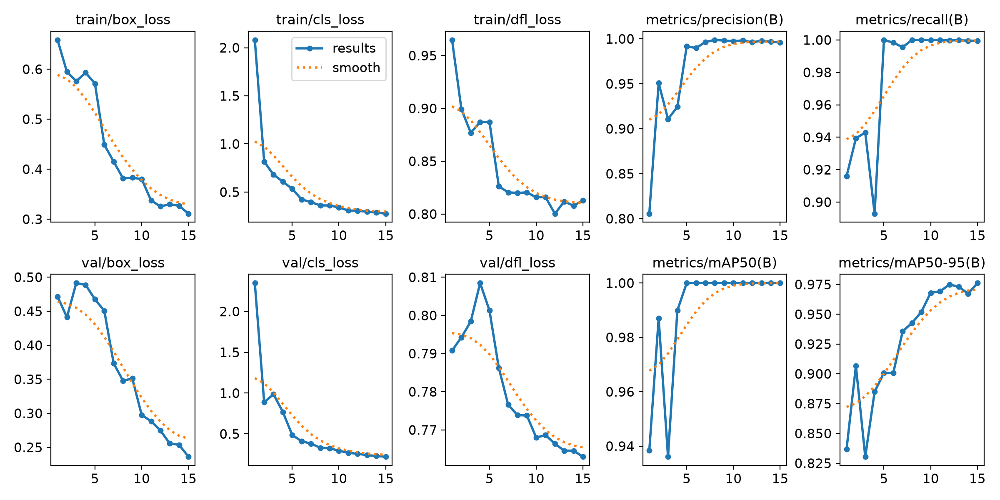
Monitoring the training.
- Losses decrease steadily: the classification loss fell from 2.08 (epoch 1) to 0.28, and the box loss from 0.66 to 0.31. The validation losses fall together with the training losses, so the model is not overfitting.
- Early epochs are noisy (the epoch-3 dip in mAP) because of learning-rate warm-up during the first 3 epochs. From epoch 6 the training losses drop sharply because Ultralytics switches off mosaic augmentation for the last 10 epochs (
close_mosaic=10), and the model sees normal, un-mixed images. - Thanks to transfer learning, mAP50-95 was already 0.837 after the first epoch. The remaining epochs mostly improved box precision (mAP50-95 rises while mAP50 is already saturated at 1.0).
Part 4: Evaluating and using the trained model
yolo task=detect mode=val model=runs/train/weights/best.pt data=data.yaml| Class | Precision | Recall | AP50 | AP50-95 |
|---|---|---|---|---|
| circle | 0.993 | 1.000 | 1.000 | 0.992 |
| square | 0.995 | 1.000 | 1.000 | 0.992 |
| triangle | 1.000 | 0.998 | 1.000 | 0.946 |
| all | 0.996 | 0.999 | 1.000 | 0.977 |
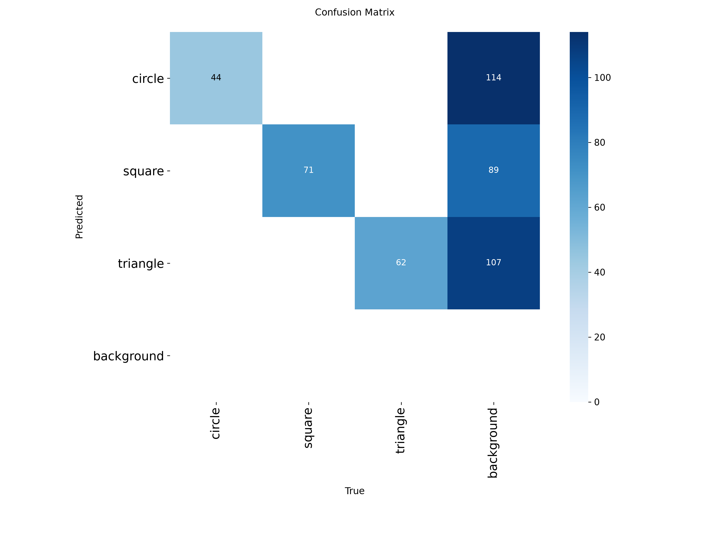
conf=0.001 (set in engine/validator.py), so it includes many near-zero-confidence boxes. These are discarded at normal inference thresholds (0.25–0.4): the predictions on new images below contain no false boxes.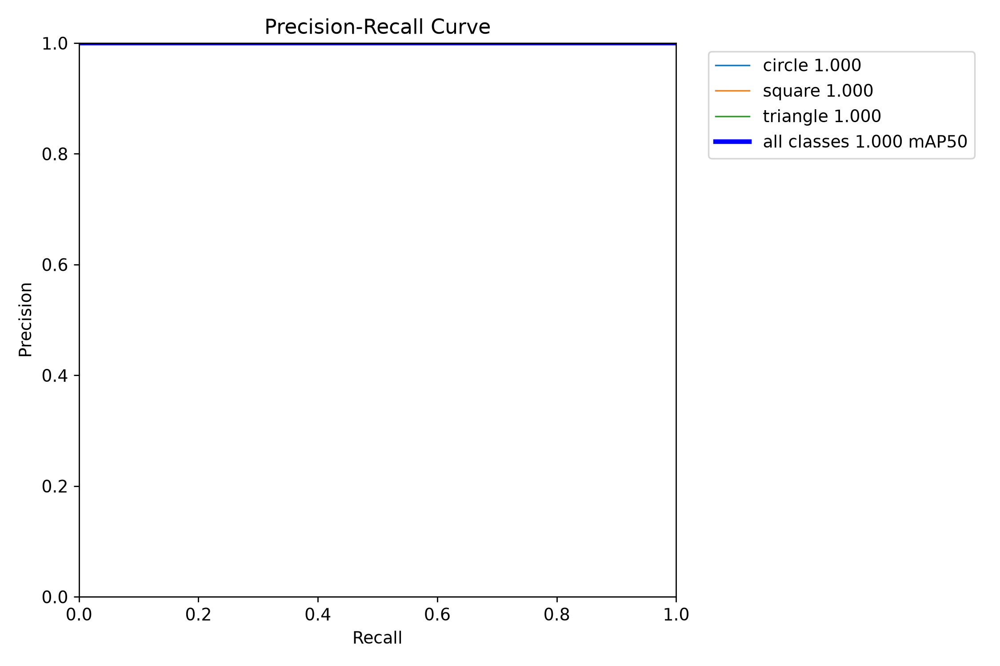
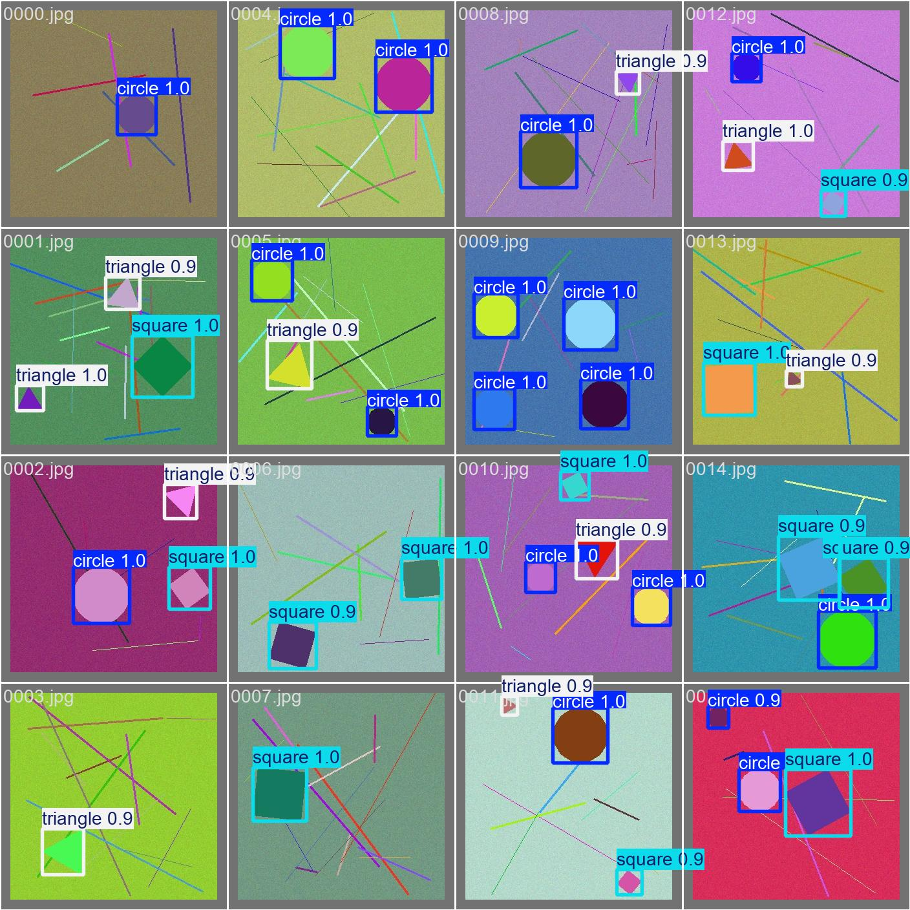
Inference on new images
model = YOLO('runs/train/weights/best.pt')
results = model('new_image.jpg')
results[0].show() # model() returns a list with one Results object per image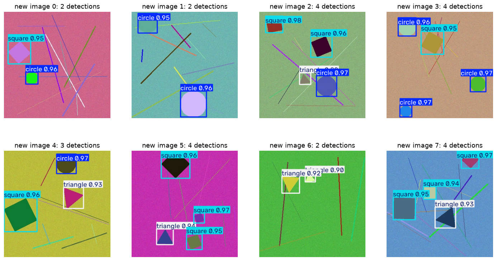
Analysis of accuracy, precision and recall.
- Precision = TP / (TP + FP): of all boxes the model drew, the fraction that are correct (0.996). Recall = TP / (TP + FN): of all real objects, the fraction found (0.999). A detection counts as a true positive only if its class is right and its IoU with the ground-truth box is ≥ 0.5.
- mAP50 (1.000) is the mean over classes of the area under the precision–recall curve at IoU 0.5. mAP50-95 (0.977) averages this over IoU thresholds 0.50, 0.55 … 0.95, so it also rewards tight boxes. It is the stricter, main COCO metric, and it is lower because a few boxes are a few pixels off.
- The model detects and classifies the shapes almost perfectly. This is expected because the task has only 3 visually distinct classes, and transfer learning gives strong features from the start. The lower AP50-95 for some classes comes from box accuracy rather than wrong classes: triangle and rotated-square corners are thin, so a box that misses a corner by a few pixels already lowers the IoU.
- New images: on the 8 unseen test images, every shape was found with the right class (confidence 0.90–0.98), including small triangles and a square partly cut off by the image border, and no line in the background clutter was mistaken for an object.
- Generalization limit: on the real photograph bus.jpg the custom model returned 1 detection(s) at conf ≥ 0.4. That photo contains no circles, squares or triangles of the kind we trained on, so any box there is a false positive (a roughly geometric part of the scene). Replacing the 80-class head with a 3-class head means the model no longer knows the COCO classes (bus, person). A detector only finds what it was trained on, and it can be fooled by inputs unlike its training data, which is why the dataset must represent real deployment conditions.
- Improving performance (as the handout suggests): train longer (100 epochs) at 640 px on a GPU; use a larger model (
yolo11s.ptoryolo11m.pt: more accurate, slower); add more and more varied images (lighting, viewpoints, occlusion, backgrounds); and tune hyperparameters (learning rate, augmentation, batch size). With real photographs, more data and more epochs matter much more than with our synthetic shapes.
Question
What is object detection in computer vision, and how does it differ from image classification? Explain your answer using a real-world example.
Object detection is the computer-vision task of finding every object of interest in an image and, for each one, telling what it is (class label + confidence) and where it is (a bounding box: x, y, width, height). The number of objects is not known in advance: an image can contain zero, one or dozens of objects of different classes. YOLO (“You Only Look Once”) does this in a single forward pass: the network predicts boxes, objectness and class scores over a grid of locations at several scales, and non-maximum suppression removes duplicate boxes.
Image classification assigns one label to the whole image (“this image is a bus”). It answers only “what is in the image?”. It gives no location, no count, and cannot describe several different objects at once.
| Image classification | Object detection | |
|---|---|---|
| Question answered | What is this image? | What objects are in this image, and where is each one? |
| Output | One class label (+ probability) per image | A list of boxes, each with a class label and confidence |
| Number of objects | Assumes one main subject | Any number, multiple classes |
| Localization | None | Bounding box coordinates |
| Training labels | One label per image (folder name) | One box + class per object (e.g. YOLO .txt files) |
| Evaluation | Accuracy, top-5 accuracy | Precision, recall, IoU, mAP50, mAP50-95 |
| Examples | ResNet, VGG (ImageNet) | YOLO, SSD, Faster R-CNN |
Real-world example: a self-driving car or a traffic camera at an intersection. An image classifier looking at the street scene of bus.jpg could only say “bus” (or “street”). That is useless for driving: the car does not learn that there are also pedestrians, how many there are, or where they are. An object detector such as the YOLO11n model we ran returns: bus (0.94) at [3, 229, 796, 728]; person (0.89) at [671, 394, 809, 878]; person (0.88) …, i.e. 5 separate objects with their positions. From these boxes the system can count pedestrians, measure how close each one is to the road, track them from frame to frame, and decide to brake. Similar examples are counting customers in a store, detecting each product on a supermarket shelf, and finding every defect on a production line. In each case it matters how many objects there are and where they are, not just what the image shows overall.
In short, classification answers “what?” for the whole image, while detection answers “what, where and how many?” for every object. Detection = classification + localization, done for multiple objects.
Conclusion
The pre-trained YOLO11n model detected multiple objects of different COCO classes in a single pass, with high confidence for large, visible objects (bus 0.94, people 0.86–0.89) and lower confidence for small or occluded ones. On our CPU it ran at about 5.4 FPS, so a GPU or a smaller input size is needed for smooth real-time video. We then completed the full custom-training pipeline: images annotated in YOLO format (normalized class x_center y_center width height), the images/labels folder structure and data.yaml, transfer-learning training whose losses decreased steadily without overfitting, and evaluation with precision 0.996, recall 0.999, mAP50 1.000 and mAP50-95 0.977. Testing on new images confirmed that the model generalizes within its domain, while the real photograph showed that a detector only recognizes the classes it was trained on. Object detection extends image classification by also answering where and how many, which is what applications such as autonomous driving, surveillance and inventory counting need.
Laboratory Experiment 7: Image Segmentation
Objective
To understand and apply four families of image segmentation (thresholding, region-based, edge-based and semantic segmentation) and compare their effectiveness on different kinds of images.
Images and models used
coins.png(scikit-image): grayscale, 24 coins on a background that gets brighter towards the right edge. Several coins nearly touch, and the coin surfaces are textured.page.png(scikit-image): a photographed text page with strongly non-uniform illumination.- A synthetic test image with known ground truth (10 discs, one touching pair and one chain of three, on a left-to-right lighting gradient plus Gaussian noise). Because the true mask is known, every method can be scored quantitatively with IoU.
bus.jpg(a street scene from the Ultralytics assets) and our own gym photomy_photo.jpgfor semantic segmentation with DeepLabV3-ResNet50, pre-trained on COCO with the 21 PASCAL-VOC classes (torchvision).
Code
Source code: lab07_segmentation.py (321 lines) download
"""Lab 7 - Segmentation techniques: thresholding, region-based (region growing + watershed), edge-based (Canny + closed contours) and semantic (DeepLabV3).""" import os import time from collections import deque import cv2 import numpy as np import matplotlib matplotlib.use("Agg") import matplotlib.pyplot as plt from scipy import ndimage as ndi HERE = os.path.dirname(os.path.abspath(__file__)) OUT = os.path.join(HERE, "..", "site", "img") os.makedirs(OUT, exist_ok=True) def save(name): plt.savefig(os.path.join(OUT, name), dpi=110, bbox_inches="tight") plt.close() def iou(pred, gt): pred, gt = pred > 0, gt > 0 return np.logical_and(pred, gt).sum() / np.logical_or(pred, gt).sum() def n_objects(mask, min_area=30): n, _, st, _ = cv2.connectedComponentsWithStats((mask > 0).astype(np.uint8)) return int(np.sum(st[1:, cv2.CC_STAT_AREA] >= min_area)) coins = cv2.imread(os.path.join(HERE, "data", "coins.png"), cv2.IMREAD_GRAYSCALE) page = cv2.imread(os.path.join(HERE, "data", "page.png"), cv2.IMREAD_GRAYSCALE) # =========================================================================== # Test image WITH ground truth (for IoU): touching discs, lighting gradient, noise # =========================================================================== rng = np.random.default_rng(7) H, W = 300, 400 gt = np.zeros((H, W), np.uint8) discs = [(60, 70, 32), (118, 70, 28), (210, 80, 35), (330, 75, 30), (80, 200, 30), (140, 215, 32), (200, 210, 28), (300, 200, 38), (360, 250, 25), (240, 255, 22)] for x, y, r in discs: cv2.circle(gt, (x, y), r, 255, -1) ramp = np.tile(np.linspace(40, 175, W), (H, 1)) # light falls from right to left synth = ramp + (gt > 0) * 65 + rng.normal(0, 10, (H, W)) synth = np.clip(cv2.GaussianBlur(synth, (3, 3), 0), 0, 255).astype(np.uint8) print(f"synthetic image: {len(discs)} discs (one touching pair + one chain of three), ground-truth foreground = " f"{100 * (gt > 0).mean():.1f}% of pixels") # =========================================================================== # 1. Thresholding segmentation # =========================================================================== t_otsu, coins_otsu = cv2.threshold(coins, 0, 255, cv2.THRESH_BINARY + cv2.THRESH_OTSU) t_page, page_otsu = cv2.threshold(page, 0, 255, cv2.THRESH_BINARY + cv2.THRESH_OTSU) page_ad_mean = cv2.adaptiveThreshold(page, 255, cv2.ADAPTIVE_THRESH_MEAN_C, cv2.THRESH_BINARY, 21, 10) page_ad_gauss = cv2.adaptiveThreshold(page, 255, cv2.ADAPTIVE_THRESH_GAUSSIAN_C, cv2.THRESH_BINARY, 21, 10) print(f"Otsu threshold coins = {t_otsu:.0f}, page = {t_page:.0f}") fig, ax = plt.subplots(2, 4, figsize=(20, 9)) ax[0, 0].imshow(coins, cmap="gray"); ax[0, 0].set_title("coins.png") ax[0, 1].hist(coins.ravel(), bins=256, range=(0, 256), color="gray"); ax[0, 1].axvline(t_otsu, color="r") ax[0, 1].set_title(f"histogram, Otsu T = {t_otsu:.0f}") ax[0, 2].imshow(coins_otsu, cmap="gray"); ax[0, 2].set_title("Global Otsu") coins_ad = cv2.adaptiveThreshold(coins, 255, cv2.ADAPTIVE_THRESH_GAUSSIAN_C, cv2.THRESH_BINARY, 151, -5) ax[0, 3].imshow(coins_ad, cmap="gray"); ax[0, 3].set_title("Adaptive GAUSSIAN (151x151, C=-5)") ax[1, 0].imshow(page, cmap="gray"); ax[1, 0].set_title("page.png (uneven illumination)") ax[1, 1].imshow(page_otsu, cmap="gray"); ax[1, 1].set_title(f"Global Otsu (T = {t_page:.0f})") ax[1, 2].imshow(page_ad_mean, cmap="gray"); ax[1, 2].set_title("Adaptive MEAN (21x21, C=10)") ax[1, 3].imshow(page_ad_gauss, cmap="gray"); ax[1, 3].set_title("Adaptive GAUSSIAN (21x21, C=10)") for a in ax.ravel(): if a is not ax[0, 1]: a.axis("off") save("lab07_thresholding.png") # =========================================================================== # 2. Region-based segmentation # =========================================================================== RG_TOLS = (15, 30, 50) def region_grow(img, seeds, tol): """4-connected region growing: add a neighbour while |I - region mean| <= tol.""" mask = np.zeros(img.shape, np.uint8) img_f = img.astype(np.float64) for sy, sx in seeds: if mask[sy, sx]: continue total, count = img_f[sy, sx], 1 q = deque([(sy, sx)]); mask[sy, sx] = 255 while q: y, x = q.popleft() for ny, nx in ((y - 1, x), (y + 1, x), (y, x - 1), (y, x + 1)): if 0 <= ny < img.shape[0] and 0 <= nx < img.shape[1] and not mask[ny, nx] \ and abs(img_f[ny, nx] - total / count) <= tol: mask[ny, nx] = 255; total += img_f[ny, nx]; count += 1; q.append((ny, nx)) return mask def clean_mask(binary, min_area=500, max_area=8000): """Close gaps, fill the holes inside textured coins, drop specks and the large bright background strip (area filter), then smooth with an opening.""" bw = cv2.morphologyEx(binary, cv2.MORPH_CLOSE, np.ones((5, 5), np.uint8), iterations=2) bw = ndi.binary_fill_holes(bw > 0).astype(np.uint8) * 255 n, lab, st, _ = cv2.connectedComponentsWithStats(bw) keep = np.isin(lab, [i for i in range(1, n) if min_area <= st[i, cv2.CC_STAT_AREA] <= max_area]) return cv2.morphologyEx(keep.astype(np.uint8) * 255, cv2.MORPH_OPEN, np.ones((5, 5), np.uint8), iterations=2) coins_mask = clean_mask(coins_ad) def watershed_segment(gray, binary): """Marker-based watershed: separates touching objects in a binary mask.""" k = np.ones((3, 3), np.uint8) opening = cv2.morphologyEx(binary, cv2.MORPH_OPEN, k, iterations=2) sure_bg = cv2.dilate(opening, k, iterations=3) # pad with background so pixels on the image border get a small distance too dist = cv2.distanceTransform(cv2.copyMakeBorder(opening, 1, 1, 1, 1, cv2.BORDER_CONSTANT, value=0), cv2.DIST_L2, 5)[1:-1, 1:-1] _, sure_fg = cv2.threshold(dist, 0.5 * dist.max(), 255, 0) sure_fg = sure_fg.astype(np.uint8) unknown = cv2.subtract(sure_bg, sure_fg) n, markers = cv2.connectedComponents(sure_fg) markers = markers + 1 # background = 1, objects = 2..n markers[unknown == 255] = 0 # 0 = "let the watershed decide" markers = cv2.watershed(cv2.cvtColor(gray, cv2.COLOR_GRAY2BGR), markers) return markers, dist, n - 1 coins_markers, coins_dist, coins_n = watershed_segment(coins, coins_mask) print(f"watershed on coins: {coins_n} objects (cleaned-mask connected components: {n_objects(coins_mask)}, " f"raw Otsu components: {n_objects(coins_otsu)})") # Seeds: one point inside each coin = the distance-transform peak of each watershed # region (one seed per coin even where two coins touch; seeds can also be clicked) seeds = [tuple(int(v) for v in np.unravel_index(np.argmax(np.where(coins_markers == i, coins_dist, 0)), coins.shape)) for i in range(2, coins_markers.max() + 1)] coins_blur = cv2.medianBlur(coins, 7) rg = {tol: region_grow(coins_blur, seeds, tol) for tol in RG_TOLS} for tol, m in rg.items(): print(f"region growing tol={tol}: {100 * (m > 0).mean():.1f}% of image labelled") # Naive watershed (every local minimum of the gradient = a marker) -> over-segmentation from skimage.segmentation import watershed as sk_watershed from skimage.filters import sobel from skimage.feature import peak_local_max grad = sobel(coins_blur) minima = peak_local_max(-grad, min_distance=3, exclude_border=False) naive_markers = np.zeros_like(coins, np.int32) for i, (y, x) in enumerate(minima, 1): naive_markers[y, x] = i naive = sk_watershed(grad, naive_markers) print(f"naive gradient watershed: {naive.max()} regions (over-segmentation)") def color_labels(markers): rng_c = np.random.default_rng(1) pal = rng_c.integers(40, 255, (markers.max() + 2, 3)).astype(np.uint8) pal[1] = 0 # background black out = pal[np.clip(markers, 0, None)] out[markers == -1] = (255, 0, 0) # watershed boundary return out fig, ax = plt.subplots(2, 4, figsize=(20, 9.5)) ax[0, 0].imshow(coins, cmap="gray"); ax[0, 0].plot([s[1] for s in seeds], [s[0] for s in seeds], "r+", ms=10, mew=2) ax[0, 0].set_title(f"{len(seeds)} seed points") for a, tol in zip(ax[0, 1:], RG_TOLS): a.imshow(rg[tol], cmap="gray"); a.set_title(f"Region growing, tol = {tol}") ax[1, 0].imshow(coins_dist, cmap="magma"); ax[1, 0].set_title("Distance transform") ax[1, 1].imshow(color_labels(coins_markers)); ax[1, 1].set_title(f"Marker watershed: {coins_n} coins") over = cv2.cvtColor(coins, cv2.COLOR_GRAY2RGB); over[coins_markers == -1] = (255, 0, 0) ax[1, 2].imshow(over); ax[1, 2].set_title("Watershed boundaries (red)") ax[1, 3].imshow(naive % 20, cmap="tab20"); ax[1, 3].set_title(f"Naive watershed: {naive.max()} regions (over-seg.)") for a in ax.ravel(): a.axis("off") save("lab07_region.png") # =========================================================================== # 3. Edge-based segmentation: Canny -> close gaps -> fill closed contours # =========================================================================== def edge_segment(gray, lo, hi, close_iter=2): edges = cv2.Canny(cv2.GaussianBlur(gray, (5, 5), 0), lo, hi) closed = cv2.morphologyEx(edges, cv2.MORPH_CLOSE, np.ones((3, 3), np.uint8), iterations=close_iter) contours, _ = cv2.findContours(closed, cv2.RETR_EXTERNAL, cv2.CHAIN_APPROX_SIMPLE) contours = [c for c in contours if cv2.contourArea(c) > 100] mask = np.zeros_like(gray) cv2.drawContours(mask, contours, -1, 255, thickness=cv2.FILLED) return edges, closed, mask, contours c_edges, c_closed, c_mask, c_cnts = edge_segment(coins, 50, 150) print(f"edge-based on coins: {len(c_cnts)} closed contours filled") noisy = np.clip(coins + rng.normal(0, 20, coins.shape), 0, 255).astype(np.uint8) n_edges, _, n_mask, n_cnts = edge_segment(noisy, 50, 150) print(f"edge-based on noisy coins: {len(n_cnts)} contours, {np.count_nonzero(n_edges)} edge px " f"vs {np.count_nonzero(c_edges)} clean") fig, ax = plt.subplots(2, 4, figsize=(20, 9.5)) ax[0, 0].imshow(c_edges, cmap="gray"); ax[0, 0].set_title("Canny edges (50,150)") ax[0, 1].imshow(c_closed, cmap="gray"); ax[0, 1].set_title("Morphological closing (gap filling)") ax[0, 2].imshow(c_mask, cmap="gray"); ax[0, 2].set_title(f"Filled closed contours ({len(c_cnts)})") cmp_img = cv2.cvtColor(coins, cv2.COLOR_GRAY2RGB) cv2.drawContours(cmp_img, c_cnts, -1, (0, 255, 0), 1) cmp_img[coins_markers == -1] = (255, 0, 0) ax[0, 3].imshow(cmp_img); ax[0, 3].set_title("Borders: edge-based (green) vs watershed (red)") ax[1, 0].imshow(noisy, cmap="gray"); ax[1, 0].set_title("coins + Gaussian noise (sigma=20)") ax[1, 1].imshow(n_edges, cmap="gray"); ax[1, 1].set_title("Canny on noisy image") ax[1, 2].imshow(n_mask, cmap="gray"); ax[1, 2].set_title(f"Edge-based result on noise ({len(n_cnts)} contours)") ax[1, 3].imshow(cv2.Canny(cv2.GaussianBlur(noisy, (5, 5), 0), 120, 250), cmap="gray") ax[1, 3].set_title("Canny (120,250): fewer false edges, more gaps") for a in ax.ravel(): a.axis("off") save("lab07_edge.png") # =========================================================================== # Quantitative comparison on the image with ground truth (IoU) # =========================================================================== t_s, s_otsu = cv2.threshold(synth, 0, 255, cv2.THRESH_BINARY + cv2.THRESH_OTSU) # block (201) must be much larger than an object, otherwise disc centres turn hollow s_adapt = cv2.adaptiveThreshold(synth, 255, cv2.ADAPTIVE_THRESH_GAUSSIAN_C, cv2.THRESH_BINARY, 201, -10) s_adapt = cv2.morphologyEx(s_adapt, cv2.MORPH_OPEN, np.ones((5, 5), np.uint8)) s_seeds = [(y, x) for x, y, r in discs] s_rg = region_grow(cv2.GaussianBlur(synth, (5, 5), 0), s_seeds, 20) s_rg_leak = region_grow(cv2.GaussianBlur(synth, (5, 5), 0), s_seeds, 25) # drift demo s_filled = ndi.binary_fill_holes(s_adapt > 0).astype(np.uint8) * 255 s_ws_markers, _, s_ws_n = watershed_segment(synth, s_filled) s_ws = ((s_ws_markers > 1) * 255).astype(np.uint8) _, _, s_edge, s_cnts = edge_segment(synth, 30, 90, close_iter=3) rows = [] timings = {} for name, fn in [("Global Otsu", lambda: cv2.threshold(synth, 0, 255, cv2.THRESH_BINARY + cv2.THRESH_OTSU)), ("Adaptive threshold", lambda: cv2.adaptiveThreshold(synth, 255, cv2.ADAPTIVE_THRESH_GAUSSIAN_C, cv2.THRESH_BINARY, 201, -10)), ("Region growing", lambda: region_grow(cv2.GaussianBlur(synth, (5, 5), 0), s_seeds, 20)), ("Watershed", lambda: watershed_segment(synth, s_filled)), ("Edge-based", lambda: edge_segment(synth, 30, 90, close_iter=3))]: t0 = time.perf_counter() for _ in range(3): fn() timings[name] = (time.perf_counter() - t0) / 3 * 1000 results = [("Global Otsu", s_otsu, n_objects(s_otsu)), ("Adaptive threshold", s_adapt, n_objects(s_adapt)), ("Region growing", s_rg, n_objects(s_rg)), ("Watershed", s_ws, s_ws_n), ("Edge-based", s_edge, n_objects(s_edge))] print(f"\nGround truth: 10 discs. Otsu T on synthetic = {t_s:.0f}") print(f"{'method':20s} {'IoU':>6s} {'objects found':>14s} {'time (ms)':>10s}") for name, m, n in results: print(f"{name:20s} {iou(m, gt):6.3f} {n:14d} {timings[name]:10.1f}") print(f"(region growing with tol=25 instead of 20: IoU = {iou(s_rg_leak, gt):.3f} -> leaks, see figure)") fig, ax = plt.subplots(2, 4, figsize=(20, 8.6)) ax[0, 0].imshow(synth, cmap="gray"); ax[0, 0].set_title("Test image (gradient + noise)") ax[0, 1].imshow(gt, cmap="gray"); ax[0, 1].set_title("Ground truth (10 discs)") for a, (name, m, n) in zip(list(ax[0, 2:]) + list(ax[1]), results): if name == "Watershed": a.imshow(color_labels(s_ws_markers)) else: a.imshow(m, cmap="gray") a.set_title(f"{name}\nIoU = {iou(m, gt):.3f}, objects = {n}") ax[1, 3].imshow(s_rg_leak, cmap="gray") ax[1, 3].set_title(f"Region growing tol=25 (mean drift -> leak)\nIoU = {iou(s_rg_leak, gt):.3f}") for a in ax.ravel(): a.axis("off") save("lab07_iou.png") # =========================================================================== # 4. Semantic segmentation with a pre-trained DeepLabV3 (torchvision) # =========================================================================== import torch from torchvision.models.segmentation import deeplabv3_resnet50, DeepLabV3_ResNet50_Weights from ultralytics.utils import ASSETS weights = DeepLabV3_ResNet50_Weights.COCO_WITH_VOC_LABELS_V1 # 21 PASCAL-VOC classes model = deeplabv3_resnet50(weights=weights, progress=False).eval() classes = weights.meta["categories"] preprocess = weights.transforms() # Fixed colour per VOC class (standard PASCAL VOC palette) def voc_palette(n=21): pal = np.zeros((n, 3), np.uint8) for i in range(n): c, r, g, b = i, 0, 0, 0 for j in range(8): r |= ((c >> 0) & 1) << (7 - j); g |= ((c >> 1) & 1) << (7 - j); b |= ((c >> 2) & 1) << (7 - j) c >>= 3 pal[i] = (r, g, b) return pal PAL = voc_palette() for src in [str(ASSETS / "bus.jpg"), os.path.join(HERE, "data", "my_photo.jpg")]: fname = os.path.basename(src) bgr = cv2.imread(src) rgb = cv2.cvtColor(bgr, cv2.COLOR_BGR2RGB) x = preprocess(torch.from_numpy(rgb).permute(2, 0, 1)).unsqueeze(0) t0 = time.perf_counter() with torch.no_grad(): out = model(x)["out"][0] ms = (time.perf_counter() - t0) * 1000 pred = out.argmax(0).numpy().astype(np.uint8) pred = cv2.resize(pred, (rgb.shape[1], rgb.shape[0]), interpolation=cv2.INTER_NEAREST) present = [(c, 100 * (pred == c).mean()) for c in np.unique(pred)] print(f"\nDeepLabV3 on {fname}: {ms:.0f} ms on CPU, input {tuple(x.shape)}") for c, pct in present: print(f" {classes[c]:12s} {pct:5.1f}% of pixels") color = PAL[pred] blend = (0.5 * rgb + 0.5 * color).astype(np.uint8) fig, ax = plt.subplots(1, 3, figsize=(18, 6.5)) ax[0].imshow(rgb); ax[0].set_title(fname) ax[1].imshow(color); ax[1].set_title("DeepLabV3 per-pixel class map") ax[2].imshow(blend); ax[2].set_title("Overlay") handles = [plt.Rectangle((0, 0), 1, 1, color=PAL[c] / 255) for c, _ in present] ax[2].legend(handles, [f"{classes[c]} ({p:.0f}%)" for c, p in present], loc="lower right", fontsize=9) for a in ax: a.axis("off") save(f"lab07_semantic_{fname.split('.')[0]}.png")
Program output
Output of lab07.py (saved in lab07_output.txt)
synthetic image: 10 discs (one touching pair + one chain of three), ground-truth foreground = 24.0% of pixels Otsu threshold coins = 107, page = 157 watershed on coins: 24 objects (cleaned-mask connected components: 23, raw Otsu components: 25) region growing tol=15: 22.6% of image labelled region growing tol=30: 31.3% of image labelled region growing tol=50: 95.5% of image labelled naive gradient watershed: 2375 regions (over-segmentation) edge-based on coins: 24 closed contours filled edge-based on noisy coins: 24 contours, 10379 edge px vs 8513 clean Ground truth: 10 discs. Otsu T on synthetic = 117 method IoU objects found time (ms) Global Otsu 0.410 2 0.2 Adaptive threshold 0.994 8 6.1 Region growing 0.939 7 118.0 Watershed 0.967 10 4.0 Edge-based 0.959 7 1.2 (region growing with tol=25 instead of 20: IoU = 0.467 -> leaks, see figure) DeepLabV3 on bus.jpg: 9537 ms on CPU, input (1, 3, 693, 520) __background__ 56.3% of pixels bus 31.0% of pixels person 12.7% of pixels DeepLabV3 on my_photo.jpg: 7821 ms on CPU, input (1, 3, 520, 520) __background__ 66.9% of pixels person 33.1% of pixels
1. Thresholding segmentation
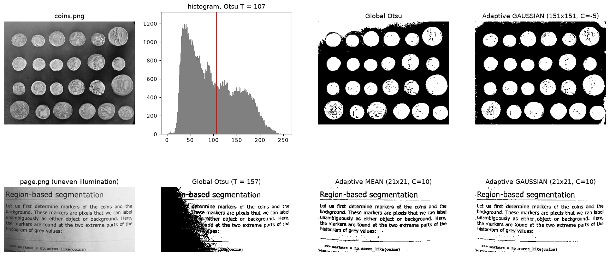
Observations. Otsu automatically chose T = 107 at the valley between the dark background peak and the bright coin peak. Most coins are segmented, but the bright right/top background strip is wrongly labelled foreground, and the darker, textured coins (bottom left) get holes. On the page, a single threshold cannot work: the left side is darker than the right, so Otsu turns the whole left part black and the text there is lost. Adaptive thresholding computes a separate threshold for each pixel from its neighbourhood (mean or Gaussian-weighted mean minus C), so it follows the illumination and produces clean text on the whole page. The Gaussian variant is slightly smoother.
Advantages / limitations. Thresholding is extremely simple and fast (well under 1 ms) and needs no training. Otsu even chooses T automatically. But it uses only intensity: it fails with uneven lighting (global), with overlapping foreground and background intensities, and with texture. It knows nothing about shape or connectivity, cannot separate touching objects, and produces noisy specks and holes that need morphological clean-up. It is best for simple, high-contrast images.
2. Region-based segmentation
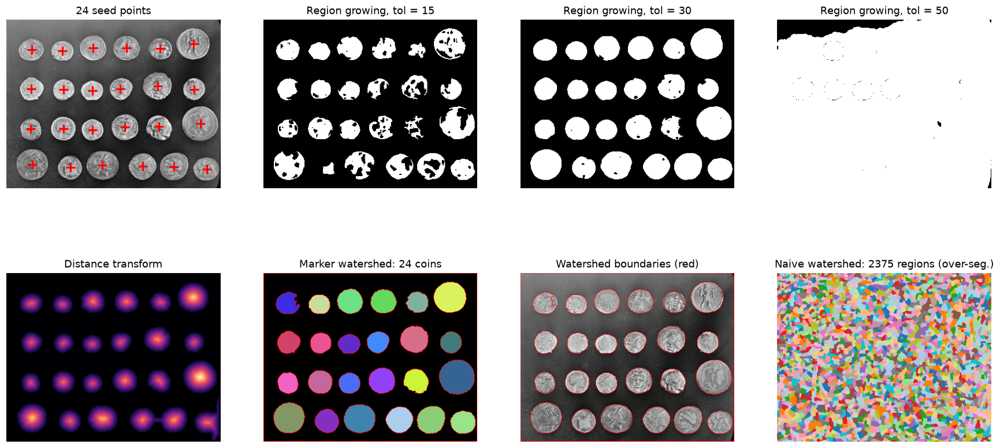
Region growing. From each seed, 4-connected neighbours are added while their intensity is within tol of the region’s running mean (on a median-filtered image). The result depends strongly on the similarity criterion:
- tol = 15: under-segmentation. The coins have embossed texture, so growth stops at the relief and the regions are full of holes (22.6% of the image labelled).
- tol = 30: good. Almost every coin is filled completely without leaking (31.3% labelled).
- tol = 50: leakage. Where a coin rim is close in intensity to the background, the region escapes and floods the whole background (95.5% labelled).
Watershed. The coins mask (adaptive threshold + hole filling + area filter) is converted to a distance transform. Its peaks (sure foreground) become one marker per coin, a dilated mask defines sure background, and cv2.watershed floods from the markers. Touching coins are split along the “ridge” between them: the cleaned mask has only 23 connected components because two coins touch, but watershed produced 24 separate coins.
Challenges: seed selection and over-segmentation.
- Region growing needs one good seed inside every object. A missing seed means a missing object, two seeds in one object split it, and a seed on noise or on the background floods the image. Our first automatic seeds (from connected components) gave 23 seeds and one landed on the bright image border, which leaked into the background. Deriving the seeds from the watershed regions fixed this.
- Results also depend on the tolerance and on the processing order, and a running mean can drift gradually across a smooth gradient.
- Watershed run naively on the gradient image creates one region per local minimum. Noise and texture create thousands of minima, giving 2375 regions for 24 coins (severe over-segmentation). Markers (or merging rules) are essential.
3. Edge-based segmentation
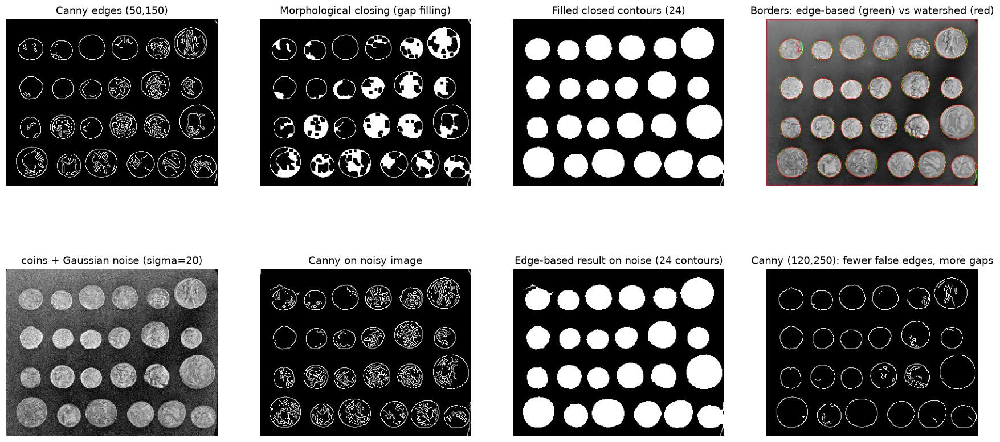
Observations. Canny produces the coin outlines, but also many internal edges from the embossing, and the outlines have small gaps. Closing bridges the gaps, and filling the external closed contours turns the outlines into solid regions, giving 24 coins. Comparison with region-based borders: the edge-based borders (green) sit exactly on the strongest intensity change and are 1 px precise, while watershed borders (red) are slightly smoother and follow the mask. Both agree closely on the coins (on the synthetic image, edge-based IoU = 0.959 vs watershed 0.967). Unlike watershed, the edge-based method does not separate touching objects: one closed contour surrounds both, so only 7 objects were found on the synthetic image where watershed found all 10.
Sensitivity to noise and edge clarity. With noise σ = 20, Canny found 10,379 edge pixels vs 8,513 on the clean image: many false edges appear inside and around the coins. Filled contours still gave 24 objects here thanks to the blur and closing, but a coin at the top left picked up an attached noisy blob. Raising the thresholds (120/250) removes false edges but breaks real contours into gaps, so contours no longer close and objects disappear. Edge-based segmentation works only when boundaries are clear, continuous and high-contrast. Weak or blurry boundaries and noisy images are its main weakness.
4. Semantic segmentation (DeepLabV3)
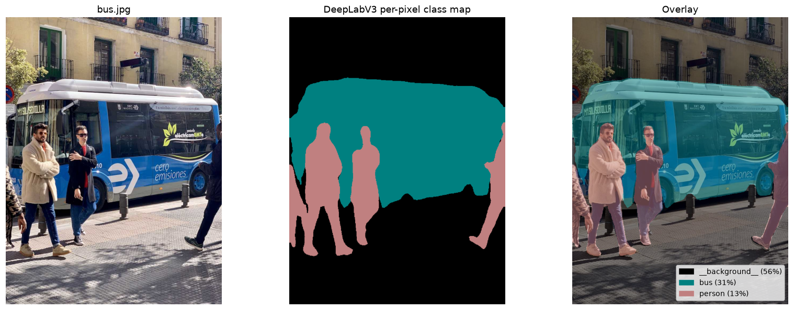
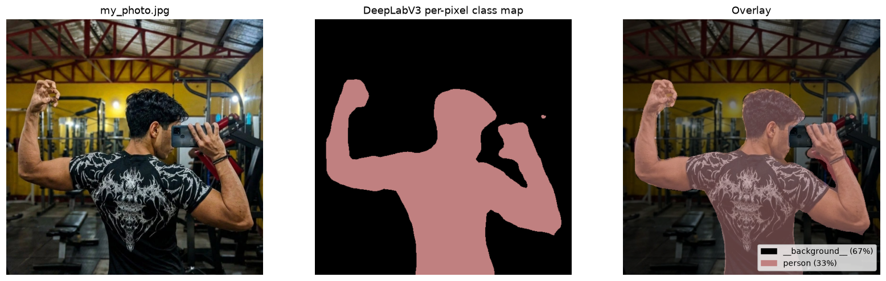
Observations. The pre-trained network assigned a class label to every pixel. The bus body, including windows with reflections and the large “e” logo, was labelled as one coherent bus region despite very different colours and textures. All pedestrians, including people partly cut off at the image border, were labelled person, with outlines that closely follow the bodies. On our gym photo the whole person (black patterned shirt, skin, dark hair) became one region even though those parts have completely different brightness, and the busy background of racks, benches and yellow walls was correctly labelled background. None of the classical methods could do this, because they only use low-level cues (intensity, gradient, similarity) and do not know what a “bus” is. Limitations: semantic segmentation does not separate individual instances (all people share one label, which would need instance segmentation such as Mask R-CNN), fine details such as fingers and the bus mirror are smoothed, and it only knows its 21 training classes: there is no “phone” or “gym equipment” class, so the phone was absorbed into the person mask and the benches into the background. Inference took about 10 s per image on our CPU (millions of operations, vs milliseconds for the classical methods); a GPU would bring this to real-time.
Benefits for scene understanding: a semantic map tells not only where regions are but what they are, at pixel precision. Autonomous driving uses this to know where the road, pedestrians and vehicles are; medical imaging to outline organs and tumours; robotics and AR to understand surfaces; satellite imaging to map land use. It is robust to lighting, colour and texture variation because it is learned from large annotated datasets (PASCAL VOC, COCO).
Analysis
Quantitative comparison with ground truth (IoU)
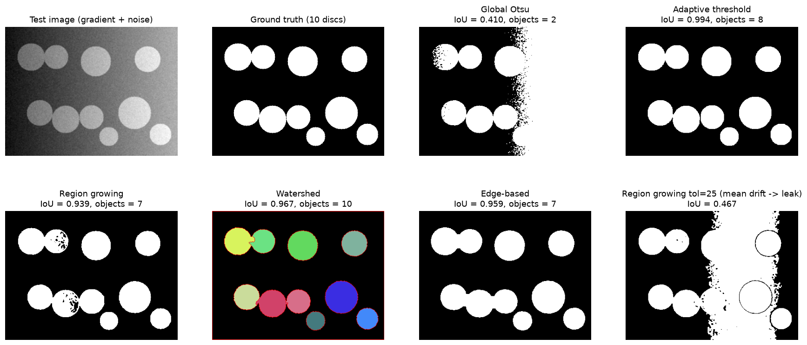
| Method | IoU | Objects found (truth: 10) | Time | Comment |
|---|---|---|---|---|
| Global Otsu | 0.410 | 2 | 0.2 ms | One threshold cannot handle the lighting gradient: the whole bright right side becomes “object”. |
| Adaptive threshold | 0.994 | 8 | 6.1 ms | Best pixel accuracy; touching discs stay merged. |
| Region growing (tol 20) | 0.939 | 7 | 118.0 ms | Good, but noise leaves holes in two discs and touching discs merge. With tol 25 it leaks: IoU 0.467. |
| Watershed (markers) | 0.967 | 10 | 4.0 ms | The only classical method that separated every touching disc. |
| Edge-based (Canny + contours) | 0.959 | 7 | 1.2 ms | Precise borders; touching discs merge into one contour. |
The IoU measures pixel accuracy, not object separation: adaptive thresholding has the best IoU but counts 8 objects, while watershed has slightly lower IoU but finds all 10. A complete evaluation needs both a pixel metric (IoU / Dice) and an object-level metric (object count, instance matching). Timings are from our CPU run: the classical methods take milliseconds, and region growing is slower only because it is a pure-Python pixel loop.
Appropriate use cases and limitations
| Technique | Appropriate use cases | Limitations |
|---|---|---|
| Thresholding (global / adaptive) | Documents and OCR, bright objects on uniform background, industrial inspection with controlled lighting, cell counting, first step of other pipelines | Uses intensity only; global fails with uneven lighting; cannot separate touching objects; sensitive to noise and texture |
| Region growing | Interactive or medical segmentation from a clicked seed (organs, lesions in CT/MRI), homogeneous regions | Needs seeds; sensitive to tolerance (holes vs leaks); drifts on gradients; slow pixel-by-pixel |
| Watershed | Separating touching or overlapping objects: cells, coins, grains, particles | Over-segments without markers; needs a good foreground mask and markers |
| Edge-based | Objects with sharp, continuous boundaries; shape measurement; contour-based detection of documents and parts | Noise creates false edges; weak edges create gaps so contours do not close; internal texture edges |
| Semantic (DeepLab, U-Net) | Complex natural scenes: autonomous driving, medical imaging, satellite land-cover, robotics, photo editing | Needs large labelled datasets and GPU; slow on CPU; fixed set of classes; no instance separation; boundaries slightly smoothed |
Computational complexity and implementation challenges
- Thresholding: O(N) for N pixels (Otsu adds one O(256) histogram search). Adaptive thresholding is O(N) with box or Gaussian filters. Challenge: choosing the block size and C. Our coins needed a very large block (151) so coin centres did not become hollow.
- Region growing: O(N) in principle (each pixel visited once), but the BFS is sequential and hard to vectorize, so a Python implementation is slow (118.0 ms on a 300 × 400 image). Challenges: automatic seed selection, tolerance tuning and mean drift.
- Watershed: about O(N log N) with a priority queue, plus distance transform and morphology. Challenge: building good markers (thresholds on the distance transform, cleaning the mask, filling holes, handling objects at the border). Our distance transform even needed zero padding so a bright strip at the border did not produce a false marker.
- Edge-based: Canny is O(N) (convolutions + non-maximum suppression + hysteresis); contour tracing is O(N). Challenge: thresholds, gap closing and choosing which contours are objects.
- Semantic segmentation: a deep CNN with tens of millions of parameters and billions of multiply-adds per image (about 10 s per image on our CPU vs milliseconds above). Challenges: annotated training data (pixel labels are expensive), GPU hardware, model size, domain shift when images differ from the training set, and the preprocessing that the pre-trained weights require (resize, normalization, RGB order).
Question
Explain the differences between thresholding, region-based, edge-based, and semantic segmentation techniques. Provide one advantage and one limitation for each method.
The four families differ in what information they use and what they output:
- Thresholding classifies each pixel independently by comparing its intensity with a threshold T (global, e.g. Otsu, or local/adaptive). It uses only the pixel value: no neighbourhood, shape or meaning. The output is a binary (or multi-level) mask.
- Region-based segmentation groups connected pixels that are similar to each other. Region growing expands from seed points while a similarity criterion holds. Watershed treats the image (or distance transform) as a topographic surface and floods it from markers. It works from the inside of objects and uses similarity plus connectivity, producing labelled regions.
- Edge-based segmentation works from the boundaries. It detects discontinuities in intensity (Sobel, Canny), links them into closed contours and takes the enclosed areas as objects. It uses differences between pixels rather than similarity.
- Semantic segmentation uses a trained deep network (DeepLab, U-Net, FCN) to assign a class label (person, bus, road …) to every pixel. It uses high-level learned features and context, so it knows what each region is, not just where boundaries are.
| Method | One advantage | One limitation |
|---|---|---|
| Thresholding | Very simple and fast (O(N), sub-millisecond), no training. Otsu picks the threshold automatically; ideal for high-contrast images such as documents. | Relies only on intensity, so it fails with uneven illumination or overlapping intensities. Global Otsu scored only IoU 0.41 on our gradient image and could not read the left half of the page. |
| Region-based | Produces connected, homogeneous regions. Watershed with markers can separate touching objects: it found all 24 coins and all 10 discs. | Sensitive to seeds and parameters. A bad seed or tolerance gives holes or leakage (tol 50 flooded 95% of the image), and watershed without markers over-segments (2375 regions). |
| Edge-based | Gives precise, sharp object boundaries that follow the actual intensity change. Good for shape measurement (IoU 0.959 on our test). | Sensitive to noise and weak edges: noise adds false edges (10,379 vs 8,513 edge pixels), and gaps leave contours open, so objects are lost or merged. |
| Semantic | Understands the scene: every pixel gets a meaningful class, robust to colour, lighting and texture changes (the whole bus labelled correctly despite windows, logos and reflections). | Needs large pixel-annotated training sets and heavy computation (about 10 s per image on CPU). It is limited to the trained classes and does not separate individual instances of the same class. |
Conclusion
Each segmentation family relies on a different cue, and that cue decides where it succeeds. Thresholding (intensity) is the fastest and works well for high-contrast scenes, and its adaptive version handles uneven lighting (IoU 0.994 vs 0.410 for global Otsu). Region-based methods (similarity and connectivity) build coherent regions, and marker-controlled watershed is the tool for separating touching objects (24/24 coins, 10/10 discs), but they depend on seeds and parameters and can leak or over-segment. Edge-based methods (discontinuity) give the most precise boundaries but break down with noise and weak or open edges. Semantic segmentation with DeepLabV3 (learned features) gave pixel-level labels with real scene understanding, at a much higher computational cost and with the need for training data. In practice these techniques are combined: thresholding or edges to build masks, watershed to split objects, and deep networks when the image is complex and the meaning of the regions matters.